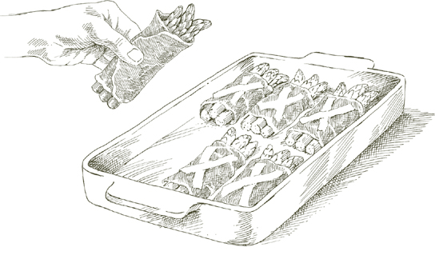
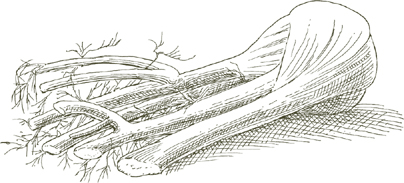
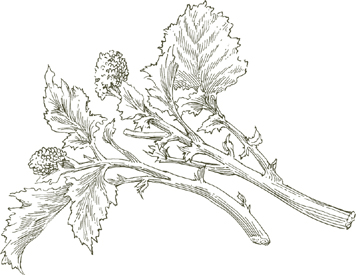
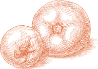

На 4-6 порций
2 крупных артишока ИЛИ 3-4 среднего размера
½ лимона
2 столовые ложки нарезанного лука
3 столовые ложки оливкового масла первого холодного отжима
½ чайной ложки очень мелко нарезанного чеснока
900 г свежего горошка в стручках ИЛИ 1 упаковка (280 г) замороженного горошка, размороженного
1 столовая ложка нарезанной петрушки
Соль
Черный перец, свежемолотый
1. Очистите артишоки от всех жестких частей. Пока работаете, натирайте срезанный артишок лимоном, чтобы он не потемнел.
2. Разрежьте каждую подготовленную артишок пополам вдоль на 4 равные части. Удалите мягкие, закрученные листья с колючими кончиками у основания и срежьте пушистый «сердечник» под ними.
Отделите стебли, но не выбрасывайте их, так как они могут быть столь же вкусными, как и сердцевина, если их правильно подготовить. Срежьте их темно-зеленую корку, чтобы обнажить светлый и нежный сердцевину, затем разрежьте их пополам вдоль или, если они очень толстые, на 4 части.
Разрежьте части артишока вдоль на дольки толщиной около 1 дюйма (2.5 см) в самой широкой части и выжмите лимонный сок на все нарезанные части, чтобы защитить их от потемнения.
3. Выберите кастрюлю с толстым дном или эмалированную чугунную кастрюлю, достаточно большую, чтобы вместить все ингредиенты, положите в нее нарезанный лук и оливковое масло, включите средний огонь, готовьте и помешивайте лук, пока он не станет очень светло-золотистым, затем добавьте чеснок. Готовьте чеснок, пока он не станет светло-золотистым, затем положите дольки артишока, ⅓ чашки воды, отрегулируйте огонь, чтобы готовить на постоянном медленном кипении, и плотно накройте кастрюлю.
4. Если используете свежий горошек: Очистите его, и подготовьте некоторые стручки для готовки, удалив внутреннюю мембрану. Не обязательно использовать все или даже большинство стручков, но сделайте столько, сколько у вас хватит терпения. (Стручки значительно способствуют сладости горошка и всего блюда, но использование их является необязательной процедурой, которую можно пропустить, если вы предпочитаете.)
5. Когда артишоки готовились около 10 минут, добавьте очищенный горошек и необязательные стручки, нарезанную петрушку, соль, перец и, если жидкости в кастрюле стало недостаточно, ¼ чашки воды. Тщательно перемешайте горошек, чтобы он хорошо покрылся. Снова плотно накройте и продолжайте готовить, пока артишоки не станут очень нежными в самой толстой части при прокалывании вилкой. Попробуйте и при необходимости добавьте соль. Также попробуйте горошек, чтобы убедиться, что он полностью приготовлен. Пока артишоки и горошек готовятся, добавьте 2 или 3 столовые ложки воды, если вы обнаружите, что жидкости недостаточно.
Если используете замороженный горошек: Добавьте размороженный горошек на последнем этапе, когда артишоки уже нежные или почти такие, тщательно перемешивая их и давая им готовиться с артишоками в течение 5 минут.
6. Когда оба овоща полностью приготовлены, если вы обнаружите, что соки в кастрюле водянистые, откройте крышку, увеличьте огонь до высокого и быстро выпарите их.
Примечание заранее  Блюдо можно приготовить заранее в тот же день, когда оно будет подано. Не refrigerate, иначе его вкус изменится. Разогрейте осторожно в закрытой кастрюле с 1 столовой ложкой воды, если необходимо.
Блюдо можно приготовить заранее в тот же день, когда оно будет подано. Не refrigerate, иначе его вкус изменится. Разогрейте осторожно в закрытой кастрюле с 1 столовой ложкой воды, если необходимо.
На 6 порций
3 крупных артишока ИЛИ 5 или 6 средних
½ лимона
4 крупных лука-порея, около 1¾ дюйма (4.5 см) в толщину, ИЛИ 6 меньших
¼ чашки оливкового масла первого холодного отжима
Соль
Черный перец, свежемолотый
1. Нарежьте подготовленные артишоки на дольки по 2.5 см и очистите стебли. В процессе работы натирайте нарезанные артишоки лимоном, чтобы они не потемнели.
2. Удалите корни лука-порея, любые повреждённые листья и около 2.5 см от их зелёных верхушек. Разрежьте лук-порей пополам вдоль, затем нарежьте его на куски длиной около 5-7.5 см.
3. Выберите кастрюлю с толстым дном или эмалированную чугунную кастрюлю, достаточно большую, чтобы вместить все ингредиенты, положите в неё лук-порей, оливковое масло и достаточное количество воды, чтобы она поднялась на 2.5 см по бокам кастрюли. Включите средний огонь, плотно накройте крышкой и готовьте на медленном огне, пока лук-порей не станет мягким.
4. Добавьте дольки артишоков, соль, перец и, если необходимо, 2 или 3 столовые ложки воды. Снова накройте крышкой и готовьте, пока артишоки не станут очень мягкими в самой толстой части при прокалывании вилкой, примерно 30 минут или более, в зависимости от артишоков. Пока артишоки готовятся, добавьте 2 или 3 столовые ложки воды, если вы заметили, что жидкости недостаточно. Когда они будут готовы, попробуйте и при необходимости добавьте соль. Если вы заметите, что соки в кастрюле слишком водянистые, откройте крышку, увеличьте огонь до максимума и быстро выпарите лишнюю жидкость.
Заметка заранее Заметка в конце заметки о Тушёных артишоках и горохе применима и здесь.
На 4-6 порций
2 больших артишока
½ лимона
450 г картофеля
⅓ чашки лука, крупно нарезанного
¼ чашки оливкового масла первого холодного отжима
¼ чайной ложки чеснока, очень мелко нарезанного
Соль
Чёрный перец, свежемолотый
1 столовая ложка нарезанной петрушки
1. Нарежьте подготовленные артишоки на дольки по 1 дюйму (2.5 см) и очистите стебли. В процессе работы натирайте нарезанные артишоки лимоном, чтобы они не потемнели.
2. Очистите картофель, промойте его в холодной воде и нарежьте на небольшие дольки толщиной около ¾ дюйма (2 см) в самой широкой части.
3. Выберите кастрюлю с толстым дном или эмалированную чугунную кастрюлю, достаточно большую, чтобы вместить все ингредиенты, положите нарезанный лук и оливковое масло, и включите средний огонь. Готовьте и помешивайте лук, пока он не станет прозрачным, но не подрумянится, затем добавьте чеснок. Готовьте чеснок, пока он не станет светло-золотистым, затем добавьте картофель, дольки артишоков и стебли, соль, перец и петрушку, и готовьте достаточно долго, чтобы перевернуть все ингредиенты 2 или 3 раза.
4. Добавьте ¼ чашки воды, отрегулируйте огонь, чтобы готовить на медленном, но постоянном кипении, и плотно накройте крышкой. Готовьте, пока картофель и артишоки не станут мягкими при прокалывании вилкой, примерно 40 минут, в основном в зависимости от картофеля. В процессе готовки добавьте 2 или 3 столовые ложки воды, если вы обнаружите, что в кастрюле недостаточно жидкости. Попробуйте и при необходимости добавьте соль перед подачей.
Заметка заранее Заметка в конце рецепта «Тушеные артишоки и горох» применима и здесь.

ТОЛЬКО ШЕСТЬ НЕДЕЛЬ весной, между апрелем и маем, сицилийские повара находят овощи достаточно молодые, чтобы приготовить фриттедду. Молодость и свежесть — идеальные компоненты этого божественного блюда, свежесть только что собранных молодых артишоков, бобов фава и гороха. Я видела, как фриттедду готовили в Палермо, когда овощи были настолько нежными, что их готовили не дольше, чем требовалось, чтобы просто перемешать их в кастрюле.
Если вы выращиваете свои собственные овощи или имеете доступ к хорошему фермерскому рынку, вы можете очень близко приблизиться к нежному сицилийскому вкусу этого блюда. Но даже если вам придется полагаться на продукцию от обычного овощевода, либо ограничьте себя временем года, когда необходимые здесь овощи самые молодые, либо примите компромиссы, предложенные ниже, и достаточно магии фриттедды проявится, чтобы это стоило ваших усилий.
Аромат свежего дикого фенхеля является важной частью этой подготовки, как и многих других сицилийских блюд. Если у Вас нет этой травы, используйте свежий укроп или попросите своего овощевода оставить для Вас листовые верхушки, которые он обычно срезает с финоккьо.
На 6 порций
3 средних ИЛИ 5 маленьких артишоков, очень свежих, без черных пятен и других discoloration
½ лимона
900 г свежих маленьких бобов фава в стручках ИЛИ ⅔ банки (425 г) «зеленых фав», слитых
450 г свежего маленького горошка в стручках ИЛИ ½ упаковки (280 г) качественного замороженного маленького горошка, размороженного
1 чашка свежего дикого фенхеля ИЛИ 1½ чашки листовых верхушек финоккьо ИЛИ ⅔ чашки свежего укропа
1½ чашки сладкого сырого лука, нарезанного очень тонко (см. примечание ниже)
⅓ чашки оливкового масла первого холодного отжима Соль
Примечание Используйте самый сладкий доступный сорт лука: Видалиа, Мауней или Бермуда. Если ни один из них недоступен, замочите нарезанный желтый лук в нескольких сменах холодной воды на 30 минут, аккуратно сжимая лук в руке каждый раз, когда меняете воду; слейте перед использованием.
1. Нарежьте подготовленные артишоки на дольки по 1.25 см и обрежьте, но не разрезайте их стебли. Во время работы натирайте нарезанные артишоки лимоном, чтобы они не потемнели.
2. Если используете свежие бобы фава, очистите их и выбросьте стручки.
3. Если используете свежий горошек, очистите его и подготовьте некоторые стручки для приготовления, удалив их внутреннюю мембрану. Не обязательно использовать все или даже большинство стручков, но чем больше Вы используете, тем слаще будет вкус фриттедда.
4. Промойте дикий фенхель, верхушки финоккьо или укроп в холодной воде, затем нарежьте крупными кусками.
5. Выберите кастрюлю с толстым дном или эмалированную чугунную кастрюлю, достаточно большую, чтобы вместить все ингредиенты, положите в нее нарезанный лук и оливковое масло, включите средний огонь и готовьте, пока лук не станет мягким и прозрачным.
6. Добавьте дикий фенхель, верхушки финоккьо или укроп, дольки артишоков и стебли, тщательно перемешайте, чтобы все хорошо покрылись, и плотно накройте кастрюлю. Через 5 минут проверьте артишоки. Если они в идеальном состоянии, они должны выглядеть влажными и блестящими, а масла и пары от лука и фенхеля должно быть достаточно для продолжения их приготовления. Но если они выглядят довольно сухими, добавьте 3 столовые ложки воды. Если вы сомневаетесь, добавьте ее в любом случае, это не повредит. Когда не проверяете кастрюлю, держите ее плотно закрытой.
7. Если используете свежие бобы фава и горох: Добавьте их, когда артишоки будут примерно наполовину готовы, примерно через 15 минут, если они очень молодые и свежие. Добавьте 2 или 3 столовые ложки воды, если сомневаетесь, что в кастрюле достаточно влаги для их приготовления. Перемешайте все ингредиенты, чтобы они хорошо покрылись.
Если используете свежие бобы фава и замороженный горох: Сначала положите бобы, готовьте 10 минут, если они очень маленькие, 15-20, если больше, затем добавьте размороженный горох и готовьте еще 5 минут, пока и артишоки, и бобы не станут мягкими.
Если используете свежий горох и консервированные бобы фава: Когда артишоки будут наполовину готовы, добавьте горох и их очищенные стручки. Готовьте, пока и горох, и артишоки не станут мягкими, добавляя 2 или 3 столовые ложки воды по мере необходимости, затем добавьте слитые консервированные «зеленые фаве» и готовьте еще 5 минут.
Если используете замороженный горох и консервированные бобы фава: Положите одновременно как размороженный горох, так и слитые бобы, когда артишоки только начали чувствовать мягкость при нажатии вилкой. Готовьте еще 5 минут.
8. Попробуйте и при необходимости добавьте соль перед подачей. Дайте фриттедде настояться несколько минут, позволяя ее вкусам раскрыться от тепла, перед тем как подать на стол, но не подавайте ее холодной. Если возможно, планируйте подавать ее сразу после приготовления, без подогрева.
HОТКРОВЕНИЕ в том, что не стоит слишком строго относиться к использованию замороженных овощей. Замороженные сердцевины артишоков жарятся очень хорошо, и контраст между их мягким внутренним содержимым и хрустящей корочкой из яйца и панировочных сухарей весьма привлекателен. Не стоит отказываться от свежих артишоков, если они очень молодые и нежные.
На 4-6 порций
3 средних артишока ИЛИ 1 упаковка замороженных сердцевин артишоков весом 280 г, размороженных
Если используете свежие артишоки: ½ лимона и 1 столовая ложка свежевыжатого лимонного сока
1 яйцо
1 чашка мелких, сухих, безвкусных панировочных сухарей, выложенных на тарелку
Овощное масло
Соль
1. Если используете свежие артишоки: Нарежьте подготовленные артишоки на дольки по 1 дюйму (2.5 см) и обрежьте и разрежьте их стебли. Во время работы натирайте нарезанные артишоки лимоном, чтобы они не потемнели.
Доведите 3 кварты (2.8 литра) воды до кипения. Добавьте 1 столовую ложку лимонного сока вместе с артишоками и готовьте в течение 5 минут или более после того, как вода снова закипит, пока артишоки не станут мягкими, но все еще достаточно твердыми, чтобы сопротивляться, когда их прокалывают в самой толстой части вилкой. Слейте воду, дайте остыть и обсушите.
Если используете замороженные артишоки: После размораживания, если целые, разрежьте пополам и тщательно обсушите бумажными полотенцами.
2. Легко взбейте яйцо в небольшой миске или глубокой тарелке.
3. Обмакните артишоки в яйцо, позволяя излишкам стекать обратно в миску, затем обваляйте их в панировочных крошках, чтобы покрыть со всех сторон.
4. Налейте достаточно масла в сковороду, чтобы оно поднялось на ¾ дюйма (1.9 см) по бокам, и включите средний огонь. Когда масло достаточно нагреется, чтобы образовать легкий туман, аккуратно положите панированные артишоки в сковороду, готовьте их достаточно долго, чтобы образовалась корочка с одной стороны, затем переверните и готовьте с другой стороны. Если они не помещаются все сразу в сковороду, жарьте их в два или более захода, не переполняя. Когда каждая партия готова, переложите их с помощью шумовки или лопатки на решетку для охлаждения или на тарелку, выстланную бумажными полотенцами. Когда все будут готовы, посыпьте солью и подавайте немедленно.
Заметка заранее Рецепт можно завершить до этого момента за несколько часов заранее, но если вы собираетесь хранить панированные овощи в холодильнике, достаньте их заранее, чтобы они полностью достигли комнатной температуры.
На 4 порции
4 крупных ИЛИ 6 средних артишоков
½ лимона
1 столовая ложка свежевыжатого лимонного сока
Форма для запекания, подходящая для подачи на стол
Масло для смазывания формы и для точечного нанесения
Соль
½ чашки свеженатертого сыра пармиджано-реджано
1. Нарежьте подготовленные артишоки на дольки шириной 1 дюйм (2.5 см) и обрежьте и разрежьте их стебли. Пока работаете, натирайте нарезанные артишоки лимоном, чтобы они не потемнели.
2. Разогрейте духовку до 190°.
3. Доведите до кипения 3 кварты воды (около 3 литров). Добавьте 1 столовую ложку лимонного сока вместе с артишоками и варите в течение 5 минут или более после повторного закипания воды, пока артишоки не станут мягкими, но все еще достаточно упругими, чтобы сопротивляться, когда их прокалывают в самой толстой части вилкой. Слейте воду и дайте остыть.
4. Нарежьте дольки артишоков на очень тонкие продольные ломтики.
5. Смажьте дно формы для запекания маслом и выложите слой ломтиков артишоков и стеблей. Посыпьте солью и тертым пармезаном, добавьте немного масла. Повторяйте процедуру, укладывая слои артишоков, пока все не будут использованы. Обильно посыпьте верхний слой тертым сыром и добавьте немного масла.
6. Выпекайте в верхней части предварительно разогретой духовки в течение 15 или 20 минут, пока не образуется легкая корочка сверху. Дайте постоять несколько минут перед подачей.
В ЭТОМ ГРАТЕНЕ артишоки полностью приготовлены перед тем, как попасть в духовку с сырыми нарезанными картофелем и обжаренным луком. Пока картофель готовится, тонкие ломтики артишоков становятся очень мягкими, отдавая часть своей текстуры, чтобы более щедро раскрыть свой вкус.
На 6 порций
2 крупных глобусных артишока ИЛИ 4 среднего размера
1 лимон, разрезанный пополам
2 столовые ложки сливочного масла и немного больше для смазывания формы для запекания
1 чашка тонко нарезанного лука
Соль
3 средних картофелины, очищенные и нарезанные тонкими ломтиками
Форма для запекания, подходящая для подачи на стол
Черный перец, свежемолотый
½ чашки свеженатертого сыра пармиджано-реджано
1. Нарежьте подготовленные артишоки на дольки шириной 1 дюйм (2.5 см) и очистите и разрежьте стебли. Используйте половину лимона, чтобы смочить срезы соком по мере работы. Поместите дольки артишока и стебли в миску с достаточным количеством холодной воды, чтобы покрыть, и выжмите сок другой половины лимона в миску. Перемешайте и оставьте до дальнейшего использования.
2. Выберите сковороду, достаточно большую, чтобы вместить все ингредиенты, положите в нее 2 столовые ложки сливочного масла и лук, и включите средний огонь. Готовьте лук медленно, периодически помешивая, пока он не станет очень мягким и не приобретет глубокий золотистый цвет. Уберите с огня.
3. Слейте дольки артишока и стебли, промойте их в холодной воде, чтобы удалить остатки кислоты. Нарежьте дольки как можно тоньше. Поместите нарезанные дольки и стебли в сковороду с луком, посыпьте солью, добавьте ½ чашки воды, включите средний огонь и накройте кастрюлю крышкой, оставив ее немного приоткрытой. Готовьте на медленном, прерывистом кипении, периодически переворачивая артишоки, пока они не станут мягкими при прокалывании вилкой, около 15 минут или больше, в зависимости от их молодости и свежести.
4. Пока артишоки готовятся, разогрейте духовку до 200°C (400°F).
5. Когда артишоки будут готовы, положите нарезанный картофель в сковороду, переверните его 2 или 3 раза, чтобы хорошо покрыть, затем снимите с огня.
6. Перелейте содержимое сковороды в форму для запекания, предпочтительно выбирая такую, в которой ингредиенты, когда они все будут внутри, не поднимутся выше 4 см. Добавьте несколько щепоток перца и немного соли, и используйте обратную сторону ложки или лопатки, чтобы равномерно распределить смесь артишоков и картофеля. Украсить сверху кусочками масла и поместите форму на верхнюю полку разогретой духовки.
7. Через 15 минут достаньте форму из духовки, переверните содержимое 2 или 3 раза, снова равномерно распределите и верните в духовку. Когда картофель станет мягким, через примерно 15 минут, достаньте сковороду, посыпьте сверху тертым пармезаном и оставьте в духовке, пока сыр не растает и не образует легкую корочку. Дайте нагреву немного снизиться перед подачей.
Оболочка для этой овощной пироги необычна, потому что вместо яиц, которые обычно используются для приготовления итальянского слоеного теста, здесь используется рикатта. Она очень легкая, и слово, которое лучше всего описывает ее текстуру, действительно, слоеная.
Вкусная начинка состоит в основном из артишоков, которые нарезаны очень тонко и тушатся на подушке из моркови и лука. Она дополняется яйцами, рикаттой и пармезаном.
На 6 порций
ДЛЯ НАЧИНКИ
4 средних артишока
1 лимон, разрезанный пополам
3 столовые ложки оливкового масла первого холодного отжима
2 столовые ложки нарезанного лука
3 столовые ложки нарезанной моркови
1 столовая ложка нарезанной петрушки
Соль
Черный перец, свежемолотый
¾ чашки свежей рикатты
½ чашки свеженатертого сыра пармиджано-реджано
2 яйца
1. Удалите жесткие части артишоков. Во время работы натрите срезанный артишок половинкой лимона, выжимая на него сок, чтобы он не потемнел. Разрежьте очищенные артишоки пополам, чтобы удалить и выбросить волоски и колючие внутренние листья, затем нарежьте их вдоль на как можно более тонкие ломтики. Поместите в миску с достаточным количеством воды, чтобы покрыть, и соком другой половины лимона.
2. Очистите стебли артишоков от жесткой внешней кожи и нарежьте их вдоль на очень тонкие ломтики. Добавьте их в миску с нарезанными артишоками.
3. Положите масло, лук и морковь в сковороду и включите средний огонь. Готовьте и помешивайте лук, пока он не станет светло-золотистым. Затем добавьте петрушку, быстро помешивая 2 или 3 раза.
4. Слейте артишоки, хорошо промойте их под холодной водой, чтобы смыть лимон, обсушите их на полотенце, затем добавьте в сковороду. Переверните их 2 или 3 раза, чтобы хорошо покрыть, добавьте соль и перец, переверните еще 2 или 3 раза, затем добавьте ½ чашки воды и накройте сковороду крышкой. Готовьте до мягкости, 5–15 минут, в зависимости от молодости и свежести артишоков. Если в процессе жидкость в сковороде станет недостаточной, добавьте 2 или 3 столовые ложки воды по мере необходимости. Когда артишоки будут готовы, в сковороде не должно остаться воды. Если она есть, снимите крышку, увеличьте огонь и быстро выпарите ее. Вылейте все содержимое сковороды в миску и дайте остыть полностью.
5. Когда остынет, смешайте с рикаттой и тертым пармезаном.
6. Легко взбейте яйца в глубокой тарелке, затем влейте их в миску. Попробуйте и при необходимости добавьте соль и перец.
ПРИГОТОВЛЕНИЕ ТЕСТА И ЗАВЕРШЕНИЕ ТОРТЫ
1½ чашки муки
8 столовых ложек (1 палочка) масла, размягченного до комнатной температуры
¾ чашки свежего рикатты
½ чайной ложки соли
Вощеная бумага ИЛИ кухонная пергаментная бумага
Форма для выпечки диаметром 8 дюймов
Масло и мука для формы
1. Разогрейте духовку до 190°C.
2. Смешайте муку, масло, рикатту и соль в миске, используя пальцы или вилку.
3. Выложите смесь на рабочую поверхность и замесите тесто в течение 5-6 минут, пока оно не станет гладким. Разделите тесто на 2 неравные части, одна из которых вдвое больше другой.
4. Раскатайте большую часть теста в круглый пласт толщиной не более ⅓ дюйма (0.8 см). Чтобы упростить перенос теста в форму, раскатывайте его на слегка присыпанной мукой вощеной бумаге или кухонной пергаментной бумаге.
5. Смазать внутреннюю часть формы для выпечки маслом, затем посыпать мукой и перевернуть, сильно постучав об стол, чтобы стряхнуть лишнюю муку.
6. Поднимите вощеную бумагу или кухонную пергаментную бумагу с пластом теста и переверните его на форму, накрывая дно и поднимая по бокам. Снимите вощеную бумагу или пергамент, и разгладьте тесто, прижимая и выравнивая любые особенно крупные складки пальцами.
7. Вылейте начинку из артишоков в форму и выровняйте ее с помощью лопатки.
8. Раскатайте оставшийся кусок теста, используя тот же метод, что и ранее. Положите его на начинку, полностью ее накрывая. Прижмите край верхнего листа теста к краю, который выложен в форме. Сделайте плотное запечатывание по всему периметру, загибая излишки теста к центру.
9. Поместите на верхнюю полку предварительно разогретой духовки и выпекайте до легкой золотистой корочки, около 45 минут. Когда вы вынете его из духовки, отстегните пружину формы и снимите обод. Дайте торте постоять несколько минут, прежде чем освободить ее от дна и перенести на сервировочное блюдо. Подавайте теплой или при комнатной температуре.

Неизвестность часто становится судьбой продуктов, которые начинают свою жизнь под запутанным названием. Этот замечательный, но незаслуженно забытый овощ не из Иерусалима, он родом из Северной Америки; это не артишок, а съедобный корень разновидности подсолнечника. Подсолнечник на итальянском языке — girasole, что, очевидно, звучало как Иерусалим для неитальянских ушей. Еще более странно, что его итальянское название не имеет никакого отношения к girasole или подсолнечнику. Это топинамбур, название бразильской труппы, которая гастролировала по стране, когда корень был введен. Возможно, он наконец станет более известен англоговорящим как “sunchoke,” название, которое его производители решили придумать, и которое будет использоваться здесь впредь.
Как использовать Когда нарезанные очень тонко, сырые санчоки хрустящие и сочные одновременно, с ореховым вкусом, который особенно приветствуется в салате. Когда их обжаривают или запекают, их текстура представляет собой смесь крема и шелка, а вкус отдаленно напоминает сердцевину артишока, но слаще, без горечи артишока. Тонкую кожицу можно оставить, когда их собираются есть сырыми, но ее нужно удалить для приготовления, так как она становится жесткой.
Как купить Санчоки в сезоне с осени до ранней весны. Они в наилучшем состоянии, когда очень твердые; по мере потери свежести они становятся губчатыми.
На 6 порций
1½ фунта (700 г) санчоков Соль
¼ чашки оливкового масла первого холодного отжима
1 чайная ложка чеснока, очень мелко нарезанного
Черный перец, свежемолотый
1 столовая ложка петрушки, очень мелко нарезанной
1. Очистите топинамбур, используя небольшой нож для чистки или очищающий нож с вращающимся лезвием. Доведите до кипения 3 литра воды, добавьте соль, затем опустите очищенный топинамбур, сначала большие куски, удерживая меньшие на несколько мгновений. Когда вода снова закипит, выньте топинамбур. Как только он остынет достаточно, чтобы его можно было держать в руках, нарежьте его ломтиками толщиной ¼ дюйма (0.6 см) или меньше. Он должен оставаться довольно твердым.
2. Положите оливковое масло и чеснок на сковороду и включите средний огонь. Готовьте, помешивая чеснок, пока он не станет очень светло-золотистым, затем добавьте нарезанный топинамбур, тщательно перемешивая, чтобы он хорошо покрылся. Добавьте соль, перец и нарезанную петрушку, и снова переверните их полностью. Готовьте, пока топинамбур не станет очень мягким, когда его прокалывают вилкой, переворачивая время от времени во время готовки. Попробуйте и при необходимости добавьте соль, подавайте сразу.
На 4 порции
450 г топинамбура
Соль
Запеканка, подходящая для подачи на стол
Масло для смазывания и точечного нанесения на форму для запекания
Черный перец, свежемолотый
¼ чашки свеженатертого пармиджано-реджано сыра
1. Разогрейте духовку до 200°C (400°F).
2. Очистите топинамбур и опустите его в подсоленную, кипящую воду. Готовьте, пока он не станет мягким, но не разваренным, когда его прокалывают вилкой. Через десять минут после того, как вода снова закипит, проверяйте его часто, так как он может быстро стать очень мягким. Слейте воду, и как только он остынет достаточно, чтобы его можно было держать в руках, нарежьте его ломтиками толщиной 1.25 см.
3. Смажьте дно формы для запекания маслом, затем положите ломтики топинамбура в нее, располагая их так, чтобы они слегка перекрывались, как черепица. Посыпьте солью, перцем и тертым пармезаном, добавьте немного масла и поставьте форму на верхнюю полку разогретой духовки. Выпекайте, пока не образуется легкая золотистая корочка сверху. Дайте немного остыть перед подачей на стол.

На 6 порций
1½ фунта (700 г) топинамбура
¼ чашки оливкового масла первого холодного отжима
1 чашка очень мелко нарезанного лука
½ чайной ложки рубленого чеснока
2 столовые ложки рубленой петрушки
⅔ чашки консервированных итальянских помидоров «сливка», нарезанных, вместе с соком
Соль
Черный перец, свежемолотый
1. Очистите топинамбур ножом для чистки овощей или ножом с поворотным лезвием, промойте их в холодной воде и нарежьте на кусочки толщиной около 1 дюйма (2.5 см).
2. Положите масло и лук в сковороду, и включите средний огонь. Готовьте и помешивайте лук, пока он не станет глубокого золотистого цвета, затем добавьте чеснок. Быстро перемешайте, добавьте петрушку, быстро перемешайте 2 или 3 раза, затем добавьте помидоры вместе с соком. Перемешайте, чтобы хорошо покрыть, и отрегулируйте огонь, чтобы готовить на медленном, постоянном кипении.
3. Когда помидоры покипят 5 минут, добавьте нарезанный топинамбур, соль и перец, переверните топинамбур один или два раза, чтобы хорошо покрыть, и отрегулируйте огонь, чтобы готовить на очень медленном, прерывистом кипении. Готовьте около 30-45 минут, периодически помешивая, пока топинамбур не станет очень мягким при нажатии вилкой.
Заметка заранее Блюдо можно приготовить заранее за несколько часов или даже на день. Не разогревайте более одного раза.
На 6 порций
450 г топинамбуров
8 пучков зеленого лука
3 столовые ложки масла
Соль
Черный перец, свежемолотый
1. Очистите топинамбуры с помощью ножа для чистки или овощечистки, промойте их в холодной воде и тщательно обсушите бумажными полотенцами. Нарежьте их очень тонкими ломтиками, желательно не толще 0.6 см.
2. Удалите корни зеленого лука и любые поврежденные листья, но не удаляйте зеленые верхушки. Промойте в холодной воде, обсушите и нарежьте каждый пучок на 2 короткие части, разрезая пополам. Если у некоторых лука толстые луковицы, разрежьте их вдоль пополам.
3. Положите масло в сковороду и включите средний огонь. Когда масло растопится и начнет пениться, добавьте зеленый лук, хорошо перемешайте, уменьшите огонь до среднего и добавьте 120 мл воды. Готовьте, пока вся вода не испарится, периодически переворачивая зеленый лук.
4. Добавьте ломтики топинамбура, соль и перец, и тщательно перемешайте, чтобы они хорошо покрылись. Добавьте еще 120 мл воды и готовьте на умеренном, но легком кипении, пока вода полностью не испарится, периодически переворачивая зеленый лук и топинамбур. Проверьте топинамбуры вилкой во время приготовления. Если они очень свежие, они могут стать мягкими до того, как вся вода испарится. В этом случае увеличьте огонь до высокого и быстро выпарите жидкость. Если, наоборот, вода испарилась, а они еще не полностью мягкие, добавьте 2 или 3 столовые ложки воды и продолжайте готовить. В большинстве случаев топинамбуры будут готовы через 20 или 25 минут. Попробуйте и при необходимости добавьте соль, подавайте сразу.

На 4 порции
1 фунт (450 г) топинамбура
Овощное масло
Соль
1. Очистите топинамбур от кожуры с помощью ножа или овощечистки, и нарежьте его на как можно более тонкие ломтики. Промойте их в нескольких сменах холодной воды, чтобы удалить остатки почвы и часть крахмала. Хорошо обсушите бумажными полотенцами.
2. Налейте в сковороду достаточно масла, чтобы оно поднялось чуть больше чем на 0.5 см по бокам, и включите сильный огонь. Когда масло разогреется, аккуратно положите столько ломтиков топинамбура, сколько поместится, не overcrowding pan. Когда они подрумянятся с одной стороны, переверните их и подрумяньте с другой стороны. Переложите их с помощью шумовки или лопатки на решетку для охлаждения, чтобы стечь, или на блюдо, выстланное бумажными полотенцами. Положите следующую партию и повторите процедуру, пока весь топинамбур не будет готов. Посыпьте солью и подавайте немедленно.
Как выбрать Первое, на что стоит обратить внимание, это кончик спаржи или бутон. Он должен быть плотно закрыт и прямым, а не открытым и поникшим. Цвет зеленой спаржи должен быть свежим, ярким и без намека на желтизну. Белая спаржа должна иметь ясный, ровный, кремовый цвет. Стебель должен быть упругим, а общий вид — свежим. Хотя спаржа, как и почти все остальное, сейчас продается большую часть года, она самая свежая весной, с апреля до начала июня. Толстая спаржа не обязательно лучше, чем тонкая, но обычно стоит дороже. Если вы будете нарезать спаржу для соуса к пасте, или ризотто, или фриттаты, вам определенно не нужно переплачивать за размер. Однако, если вы подаете спаржу целиком, более мясистый стебель может быть более удовлетворительным.
Как сохранить В идеале спаржа должна попасть в кастрюлю сразу после покупки, но может пройти несколько часов или даже день, в течение которого вы захотите сохранить ее как можно свежей. Свяжите спаржу в пучок, если она рыхлая, и поставьте ее с нижней частью в контейнер с 2-5 см холодной воды. Вы можете хранить ее таким образом в прохладном месте, без холодильника, до одного дня или полутора дней.
Как подготовить к готовке Почти вся древесная часть в нижней части стебля может быть съедобной, если спаржа правильно подготовлена. Начните с того, что отрежьте около 2.5 см от толстого конца. Если вы заметили, что конец стебля, который вы открыли, сухой и волокнистый, отрежьте немного больше, пока не дойдете до более влажной части. Чем моложе спаржа, тем меньше вам нужно будет обрезать снизу.
Несмотря на то, что центр стебля сочный и нежный, более темные зеленые волокна вокруг него не такие, и их нужно удалить. Держите спаржу кончиком к себе и с помощью маленького острого ножа снимите жесткий тонкий внешний слой стебля, начиная от основания на глубину около 1/16 дюйма и постепенно сужая до нуля, поднимая лезвие к более узкой части стебля у основания бутона. Поверните стебель немного и повторите процедуру, пока не обрежете его со всех сторон. Затем удалите любые маленькие листья, появляющиеся ниже кончика спаржи.
Замочите спаржу на 10 минут в тазу с холодной водой, затем промойте в 2-3 сменах воды.
Как готовить Выберите любую кастрюлю, которая сможет вместить обрезанные стебли, лежащие горизонтально. Наполните водой и доведите до кипения. Добавьте 1 столовую ложку соли на каждый фунт (450 г) спаржи, и когда вода снова начнет быстро кипеть, положите спаржу. Накройте кастрюлю, чтобы ускорить возвращение воды к кипению. Когда это произойдет, вы можете снять крышку. Через 10 минут вы можете начать проверять спаржу, прокалывая самую толстую часть стебля вилкой. Она готова, когда легко прокалывается. (Если она очень тонкая и особенно свежая, может потребоваться на минуту или две меньше.) Сразу же слейте, когда приготовите.
На 4 порции
2 фунта (900 г) свежей спаржи
Соль
Форма для запекания, подходящая для подачи на стол
Масло для смазывания и точечного распределения по форме
⅔ чашки свеженатертого пармиджано-реджано сыра
1. Разогрейте духовку до 230°C (450°F).
2. Подготовьте и отварите спаржу.
3. Смажьте дно прямоугольной или овальной формы для запекания маслом. Поместите отваренную спаржу в форму, укладывая их рядом друг с другом в частично перекрывающихся рядах, с тем, чтобы все бутоны были направлены в одну сторону. Кончики спаржи в верхнем ряду должны перекрывать концы стеблей в ряду ниже. Посыпьте каждый ряд солью и тертым сыром, и добавьте немного масла, прежде чем уложить следующий ряд сверху.
4. Запекайте на верхней полке разогретой духовки, пока не образуется легкая золотистая корочка сверху. Проверьте через 15 минут запекания. После того как вы достанете из духовки, дайте постоять несколько минут перед подачей.
На 4 порции
К ингредиентам предыдущего рецепта добавьте:
2 столовые ложки сливочного масла
4 яйца
Соль
Черный перец, свежемолотый
1. Приготовьте запеченную спаржу с пармезаном, как указано в рецепте выше.
2. Достаньте форму для запекания из духовки и разделите спаржу на 4 порции, положив каждую на теплую тарелку.
3. Положите сливочное масло на сковороду, включите средний огонь, и когда пена от масла начнет утихать, разбейте яйца в сковороду и посыпьте солью. Не добавляйте больше яиц за один раз, чем поместится без перекрытия. Если сковорода не может вместить все яйца сразу, жарьте их в два или более подходов.
4. Положите жареное яйцо на каждую порцию спаржи, затем полейте соками из формы для запекания каждое яйцо. Посыпьте перцем и подавайте немедленно.
На 6 порций
18 толстых стеблей свежей спаржи
½ фунта итальянского сыра фонтина, нарезанного тонкими ломтиками (см. примечание ниже)
6 больших тонких ломтиков прошутто
2 столовые ложки сливочного масла, плюс немного для смазывания и точечного нанесения в форму для запекания
Форма для запекания, подходящая для подачи на стол
Примечание Если вы не можете найти настоящий импортный итальянский фонтине, вместо того чтобы заменять его безвкусным аналогом фонтине из других источников, используйте сыр пармиджано-реджано, нарезанный тонкими длинными полосками. В этом случае замените прошутто на вареную несоленую ветчину, так как и пармезан, и прошутто соленые, и их сочетание может сделать пучки спаржи слишком солеными.
1. Обрежьте и отварите спаржу, готовя ее больше на твердой стороне, чем на мягкой.
2. Разогрейте духовку до 200°C (400°F).
3. Отложите 12 ломтиков фонтине (или 12 длинных полосок пармезана) и разделите остальной сыр на 6 более или менее равных кучек.
4. Раскройте ломтик прошутто (или вареной ветчины) и положите на него 3 стебля спаржи. Между стеблями разместите весь сыр из одной из 6 равных кучек. Добавьте 1 чайную ложку масла, затем плотно заверните прошутто вокруг стеблей спаржи. Продолжайте так, пока не сделаете 6 пучков спаржи и сыра, завернутых в прошутто или ветчину.

5. Выберите форму для запекания, которая вмещает все пучки без наложения. Легко смажьте дно формы маслом и положите в нее пучки спаржи. Сверху на каждый положите 2 перекрестных ломтика фонтине или полоски пармезана, отложенные ранее. Легко точечно нанесите масло на каждый пучок и поместите форму на верхнюю полку разогретой духовки. Запекайте около 20 минут, достаточно, чтобы сыр расплавился и образовал легкую пятнистую корочку.
6. После того как вы достанете блюдо из духовки, дайте ему немного настояться перед подачей. При подаче каждого пучка полейте его соками из формы для запекания и подайте хороший, хрустящий хлеб для обмакивания.
Пока открыватели Америки не вернулись домой с бобами, а также с золотом и серебром, единственным бобом, известным Европе до этого времени, был фава, или широкий боб. Любопытно, что, хотя его выращивают и потребляют уже почти 5000 лет, его популярность в Италии никогда не выходила за пределы юга и центра. Тосканцы выращивают их на акрах и едят их ведрами, даже не готовя, обмакивая их сырыми в крупную соль и запивая пекорино, овечьим сыром. Но на севере Италии большинство людей никогда не пробовали их и не имеют представления, что с ними делать.
Когда и как покупать Их сезон длится с апреля по июнь, но лучшие бобы — это самые ранние и молодые. Когда их очищают, они должны быть размером с бобы лима или чуть больше. Более крупные фава жестче, суше и более крахмалистые. Ищите стручки, которые не слишком сильно выпирают от переросших бобов.
Как готовить Когда готовите свежие бобы фава, лучший совет — делать, как римляне. Классический римский рецепт, который весной можно попробовать в каждой траттории города, не имеет равных среди великих блюд из бобов. Я никогда не проходила ни одной весны, не приготовив его как минимум полдюжины раз, и ни одно блюдо, которое я ставлю на стол, не принимается так тепло. В Риме это блюдо известно как fave al guanciale, потому что бобы готовятся с свиным щеками, guanciale. В данном варианте панчета — которая гораздо легче найти — заменяет свиные щеки с полным успехом.
На 4 порции
Панчета в одном куске толщиной 1.25 см
1.5 килограмма (3 фунта) свежих бобов фава в стручках
2 столовые ложки оливкового масла первого холодного отжима
2 столовые ложки мелко нарезанного лука
Черный перец, свежемолотый
Соль
1. Разверните панчету и нарежьте ее полосками шириной 0.6 см.
2. Очистите бобы, выбросив стручки. Промойте бобы фава в холодной воде.
3. Положите масло и лук в сковороду и включите средний огонь. Готовьте и помешивайте лук, пока он не станет прозрачным, затем добавьте полоски пачеты. Готовьте около 2-3 минут, затем добавьте бобы и перец, и перемешайте, чтобы хорошо их покрыть. Добавьте 80 мл (⅓ чашки) воды, отрегулируйте огонь, чтобы готовить на самом медленном кипении, и накройте сковороду крышкой. Если бобы очень молодые и свежие, они приготовятся за 8 минут, но если они не в своем лучшем состоянии, это может занять 15 минут или даже дольше. Проверяйте их время от времени вилкой. Если жидкости становится недостаточно для готовки, добавьте 3 или 4 столовые ложки воды. Когда они станут мягкими, добавьте соль, тщательно перемешайте и готовьте еще минуту или две. Если в сковороде останется вода, откройте крышку, увеличьте огонь до высокого и быстро выпарите ее. Подавайте сразу, в сопровождении толстых ломтей хрустящего хлеба.

Весна и лето щедры на свои дары овощей, но ни один из них не столь ценен и не так характерен для итальянского стола, как молодая зеленая фасоль в своем свежем виде. Когда в июне в Италии вы позволите себе вписаться в ритм итальянского обеда и поедите пасту, за которой, возможно, последуют скалоппини или курица или рыба, а затем на столе появится блюдо с еще теплой отварной зеленой фасолью, сверкающей от оливкового масла и лимонного сока, вы можете подумать, после укуса этой фасоли, что ничего не может быть вкуснее.
Нет ничего волшебного в том, чтобы сделать простое блюдо из отварной фасоли красивым и вкусным. Качество оливкового масла, конечно, имеет огромное значение. Но все начинается с фасоли, как ее выбирают и как готовят.
Как купить Хотя сейчас они доступны в течение всего года, те, что выращены местно весной и летом, все еще лучшие. Их цвет должен быть однородным зеленым, либо светлым, либо темным, но ровным, без пятен или желтых участков. Их кожица должна выглядеть свежей, почти влажной, не тусклой. А фасоль не должна быть смешанной, а вся одного размера, желательно не слишком толстой. Если можете, возьмите фасоль из корзины и сломайте ее: она должна трещать четко и хрустяще.
Как готовить Фасоль должна готовиться достаточно долго, чтобы развить округлый, ореховый, сладкий вкус: ее не следует переваривать, но и недоваривать тоже. Когда она недоварена, вкус ее не фасоли, а сырого травяного вкуса. При варке фасоли необходимо добавить соль в кипящую воду перед тем, как опустить фасоль, чтобы сохранить их ярко-зеленый цвет. Этот принцип применяется ко всем зеленым овощам, особенно шпинату и швейцарскому мангольду. Овощ не становится соленым, потому что практически вся соль остается растворенной в воде.

Варка 1 фунта зеленой фасоли
• Отломите оба конца фасоли, затем замочите фасоль в тазу с холодной водой на 10 минут.
• Доведите до кипения 4 кварты воды. Добавьте 1 столовую ложку соли, что временно замедлит кипение. Как только вода снова начнет быстро кипеть, опустите в нее отцеженную зеленую фасоль. Когда вода снова закипит, отрегулируйте огонь так, чтобы она кипела умеренно. Время приготовления будет варьироваться в зависимости от молодости и свежести фасоли. Если она очень молодая и свежая, это может занять 6 или 7 минут; если нет, это может занять 10 или 12 минут или даже дольше. Начните пробовать фасоль после 6 минут варки. Слейте, когда она будет упругой, но нежной, когда потеряет свой сырой, растительный вкус.
На 6 порций
1 фунт свежей, хрустящей зеленой фасоли
3 столовые ложки масла
¼ чашки свеженатертого пармиджано-реджано сыра
Соль
1. Подготовьте, замочите, отварите и слейте воду с зеленой фасоли, как описано выше.
2. Положите фасоль и масло в сковороду и включите средний огонь. Когда масло растает и начнет пениться, переверните фасоль, чтобы хорошо ее покрыть. Добавьте тертый сыр, тщательно перемешивая фасоль. Попробуйте фасоль и при необходимости добавьте соль. Переверните их еще раз или два, переложите на теплую тарелку и подавайте сразу.
На 6 порций
450 г свежей молодой зеленой фасоли
3 или 4 средние моркови
Соль
115 г мортаделлы ИЛИ отварной не копченой ветчины, нарезанной кубиками размером 0.6 см
3 столовые ложки масла
1. Подготовьте, замочите, отварите и слейте воду с зеленой фасоли. Они будут готовиться еще в сковороде, поэтому слейте воду, когда они будут довольно крепкими.
2. Очистите морковь, промойте ее в холодной воде и нарежьте на палочки чуть тоньше, чем фасоль.
3. Выберите сковороду для жарки, которая сможет вместить все ингредиенты без переполнения. Положите в нее фасоль, морковь, соль, нарезанную мортаделлу или ветчину и масло. Включите средний огонь и готовьте, часто переворачивая фасоль и морковь, чтобы хорошо их покрыть. Когда масло начнет пениться, накройте сковороду. Готовьте, пока морковь не станет мягкой, проверяя через 5-6 минут и время от времени переворачивая их и фасоль. Попробуйте и при необходимости добавьте соль, подавайте немедленно.
НИГДЕ В ИТАЛИИ приготовление овощей не поднято на более высокую ступень, чем на генуэзском побережье. Аромат и насыщенный вкус, которые характеризуют эту кухню, прекрасно представлены этим пикантным пирогом, который сочетает в себе зеленые бобы с картофелем, майораном и пармезаном. Это блюдо подойдет для любого меню: в качестве закуски, овощного гарнира, легкого летнего обеда или как часть шведского стола.
На 6 порций
½ фунта (225 г) картофеля для варки
1 фунт (450 г) свежих зеленых бобов
2 яйца
1 чашка свеженатертого пармиджано-реджано сыра
Соль
Черный перец, свежемолотый из мельницы. Нарезанный майоран, 2 чайные ложки, если свежий, 1 чайная ложка, если сушеный
Круглая форма для торта диаметром 9 дюймов (23 см)
Оливковое масло первого холодного отжима
Несладкие панировочные сухари, слегка поджаренные
1. Вымойте картофель, положите его с кожурой в кастрюлю с достаточным количеством холодной воды, чтобы полностью покрыть, и доведите до кипения.
2. Обрежьте, замочите, отварите и слейте зеленую фасоль. Она будет готовиться еще больше в духовке позже, поэтому слейте воду, когда она будет достаточно крепкой.
3. Измельчите фасоль очень мелко, но не в пюре, в кухонном комбайне или пропустите через самые крупные отверстия мясорубки и положите в миску.
4. Разогрейте духовку до 175°C (350°F).
5. Слейте картофель, когда он станет мягким, проверяя его вилкой, очистите его и пропустите через мясорубку или картофелемялку в миску с фасолью. Не используйте кухонный комбайн, так как он делает картофель клейким.
6. Разбейте яйца в миску, добавьте тертый пармезан, соль, несколько щепоток перца и майоран. Тщательно перемешайте, чтобы все ингредиенты равномерно соединились.
7. Легко намажьте форму для запекания оливковым маслом. Посыпьте панировочными сухарями всю внутреннюю поверхность формы, затем переверните форму вверх дном и постучите по столу, чтобы выбить лишние сухари.
8. Поместите смесь фасоли и картофеля в форму, равномерно распределяя и выравнивая лопаткой. Сверху посыпьте панировочными сухарями и равномерно полейте тонкой струйкой оливкового масла. Поставьте в верхнюю треть разогретой духовки и запекайте в течение 1 часа. Дайте постоять несколько минут, затем проведите лезвием ножа по краям пирога, чтобы отделить его от формы, переверните на тарелку, а затем снова на другую тарелку. Подавайте теплым или при комнатной температуре.
Заранее Вы можете подготовить рецепт за несколько часов заранее. Не ставьте в холодильник. Завершите и подавайте в тот же день, когда начали.
На 4-6 порций
1 фунт (450 г) свежей зеленой фасоли
1 сладкий желтый болгарский перец
3 столовые ложки оливкового масла первого холодного отжима
1 средняя луковица, нарезанная очень тонко
⅔ чашки консервированных итальянских помидоров «сливка», нарезанных крупно, с соком, ИЛИ свежие, спелые помидоры, очищенные и нарезанные
Соль
Измельченный острый красный перец по вкусу
1. Отломите оба конца стручков фасоли, замочите их в тазу с холодной водой на 10 минут, затем слейте и отложите в сторону.
2. Помойте перец в холодной воде, разрежьте его вдоль по складкам, удалите семена и мякоть, очистите его сырым овощечисткой. Нарежьте на длинные полоски шириной менее ½ дюйма (1.25 см).
3. Положите масло и лук в сковороду, включите средний огонь и готовьте лук, помешивая, пока он не станет прозрачным. Добавьте полоски перца и нарезанные помидоры с соком. Перемешайте все ингредиенты, чтобы хорошо их покрыть, и отрегулируйте огонь для постоянного, но легкого кипения в течение около 20 минут, пока масло не отделится от томатов.
4. Добавьте сырую зеленую фасоль, переверните их 2 или 3 раза, чтобы хорошо покрыть, добавьте ⅓ чашки воды или меньше, если вы используете свежие помидоры, которые оказались водянистыми, соль и острый перец. Накройте и готовьте на постоянном кипении до мягкости, 20–30 минут, в зависимости от молодости и свежести фасоли. Если жидкости для приготовления станет недостаточно, добавьте 1 или 2 столовые ложки воды по мере необходимости. Когда фасоль будет готова, если сок в сковороде водянистый, откройте крышку, увеличьте огонь до максимума и быстро выпарите. Попробуйте и при необходимости добавьте соль и острый перец, и подавайте сразу.
Заметка заранее Блюдо можно приготовить заранее за несколько часов и осторожно разогреть перед подачей. Не refrigerate.

Пастиччо может означать одно из двух в итальянском языке. В повседневной жизни это означает «беспорядок», например, «Как я вообще попал в этот пастиччо?». Однако, когда оно создается намеренно поваром, это смесь сыра и овощей, мяса или приготовленной пасты, связанная яйцами или бешамелем, или тем и другим. Иногда оно запекается в тесте, иногда нет. То, что приведено ниже, можно было бы сделать в корке, но оно не сделано, и я думаю, что так оно легче и лучше.
На 6 порций
1 фунт (450 г) свежей зеленой фасоли
3 столовые ложки масла
Соль
Соус бешамель, приготовленный с использованием 1¼ чашки молока, 2 столовых ложек масла, 2 столовых ложек муки и ⅛ чайной ложки соли
3 яйца
3 столовые ложки свеженатертого сыра пармиджано-реджано
Целая мускатная орех
Форма для суфле на 6–8 чашек
½ чашки несладких панировочных сухарей, слегка поджаренных
1. Оторвите оба конца стручков, замочите их в тазу с холодной водой на 10 минут, слейте воду и нарежьте на кусочки длиной около 1 дюйма (2.5 см).
2. Выберите сковороду, которая может вместить все стручки плотно, но без перекрытия. Положите 2 столовые ложки сливочного масла, зеленые стручки, 2 или 3 щепотки соли, достаточно воды, чтобы покрыть, и включите средний огонь. Готовьте, периодически переворачивая стручки, пока вся вода не выпарится. Продолжайте готовить еще минуту или две, переворачивая стручки в масле, затем снимите с огня.
3. Разогрейте духовку до 190°C (375°F).
4. Приготовьте соус бешамель, доведя его до средней густоты.
5. Легко взбейте яйца в миске и добавьте натертый пармезан и немного тертого мускатного ореха — около ⅛ чайной ложки. Добавьте зеленые стручки и соус бешамель, тщательно перемешивая, чтобы получить однородную смесь всех ингредиентов.
6. Намажьте внутреннюю часть формы для суфле оставшейся столовой ложкой масла и посыпьте достаточным количеством панировочных сухарей, чтобы покрыть дно и стенки. Переверните форму вверх дном и резко постучите о стол, чтобы стряхнуть лишние крошки. Вылейте содержимое миски в форму.
7. Поместите форму на верхнюю полку разогретой духовки и выпекайте, пока не образуется легкая корочка сверху, около 45 минут.
8. Чтобы извлечь, проведите ножом вдоль стороны пастиччо, пока он горячий, освобождая его от формы по всему периметру. Позвольте ему постоять несколько минут, затем накройте форму обеденной тарелкой, перевернутой дном вверх, крепко удерживайте тарелку и форму полотенцем и переверните форму вверх дном. Пастиччо должен легко выскользнуть на тарелку, с небольшим потрясыванием. Теперь вам нужно перевернуть его на другую тарелку. Поместите пастиччо между двумя тарелками и переверните. Дайте постоять несколько минут перед подачей.

Мы привыкли видеть брокколи на рынке круглый год, но у него есть свой естественный сезон, с конца осени до зимы, когда он в наилучшем состоянии. При покупке обратите внимание на соцветия или бутоны: они должны быть плотно закрыты, а их глубокий сине-зеленый или пурпурный цвет не должен иметь намека на желтизну. Самая мясистая и вкусная часть овоща — это его стебель, который нужно лишь очистить от жесткой внешней кожи, чтобы он стал вполне съедобным. Листья тоже отличные, с вкусом, похожим на капусту, и в Италии, где брокколи поступает на рынок свежесобранным и окруженным листьями, они очень ценятся. К сожалению, они также быстро портятся, и в Северной Америке упаковщики их удаляют. Если вы выращиваете брокколи сами, попробуйте листья в овощном или бобовом супе.
ТЕХНИКА, иллюстрируемая этим рецептом — обжаривание бланшированных зеленых овощей в оливковом масле и чесноке — аналогична той, что используется для шпината и швейцарского мангольда, и это один из самых вкусных способов приготовления брокколи.
На 6 порций
1 пучок свежего брокколи (примерно 450–700 г)
Соль
¼ чашки оливкового масла первого холодного отжима
2 чайные ложки чеснока, очень мелко нарезанного
2 столовые ложки нарезанной петрушки
1. Отрежьте около 1.5–2 см от нижнего конца стебля. Используйте острый нож, чтобы срезать жесткую темно-зеленую кожу, окружающую нежное ядро основного стебля и ответвляющиеся стебли. Углубитесь там, где стебель шире, потому что кожа там толще. Разрежьте более крупные стебли пополам или, если они очень большие, на четыре части, не отделяя соцветия. Промойте в 3 или 4 полных сменах холодной воды.
2. Доведите 4 литра воды до быстрого кипения. Добавьте 1 столовую ложку соли и, когда вода снова закипит, опустите брокколи. Отрегулируйте огонь, чтобы поддерживать умеренное кипение, и готовьте, пока стебель брокколи не будет прокалываться вилкой, примерно 5 минут, в зависимости от молодости и свежести овоща. Сразу же слейте, когда будет готово.
3. Выберите сковороду или сковороду для жарки, которая сможет вместить весь брокколи, не слишком плотно его прижимая. Влейте оливковое масло и добавьте чеснок, включите средний огонь. Готовьте и помешивайте чеснок, пока он не приобретет светло-золотистый цвет, затем добавьте брокколи, соль и нарезанную петрушку. Переверните кусочки овощей 2 или 3 раза, чтобы они полностью покрылись смесью. Готовьте около 2 минут, затем переложите содержимое сковороды на теплое блюдо и подавайте немедленно.
Заранее подготовьте Подготовьте брокколи до этого момента за несколько часов до подачи в тот же день, но не ставьте в холодильник.
На 6 порций
1 пучок свежего брокколи, подготовленного, вымытого, приготовленного и отцеженного, как описано выше
3 столовые ложки сливочного масла
Соль
½ чашки свеженатертого parmigiano-reggiano сыра
Выберите сковороду или сковороду для жарки, которая сможет вместить все кусочки брокколи, не слишком плотно их прижимая, добавьте сливочное масло, включите средний огонь, и когда пена от масла начнет оседать, добавьте приготовленный и отцеженный брокколи и соль. Переверните брокколи полностью 2 или 3 раза и готовьте около 2 минут, затем добавьте тертый Пармезан. Переверните брокколи еще раз, затем переложите содержимое сковороды на теплое блюдо и подавайте немедленно.
ИСПОЛЬЗУЮТ ТОЛЬКО СОЦВЕТИЯ, так как они лучше всего подходят для жарки. Стебли слишком хороши, чтобы выбрасывать их; после обрезки используйте их в приготовленном салате или овощном супе, или обжарьте их с чесноком и оливковым маслом.
На 6 порций
1 средний пучок свежего брокколи (около 450 г)
Соль
2 яйца
1 чашка мелкой, сухой, безвкусной панировочной крошки, выложенной на тарелку
Овощное масло
Примечание Тесто, используемое здесь, состоит из яиц и панировочных сухарей. Другим отличным тестом для соцветий является пастелла, тесто из муки и воды, используемое для жареного цуккини.
1. Отрежьте соцветия там, где их стебли встречаются с стеблем. Отложите стебель, обрезав его жесткую внешнюю оболочку, и используйте его в другом блюде, как предложено в вводных замечаниях выше.
2. Промойте соцветия в 2 или 3 сменах холодной воды. Доведите 2 кварты воды до быстрого кипения, добавьте большую щепотку соли, и как только вода снова закипит, опустите в нее соцветия. Время от времени погружайте любую часть соцветия, которая всплывает над уровнем воды, чтобы она не пожелтела. Когда вода снова закипит, достаньте соцветия с помощью шумовки и отложите, чтобы они остыли. Когда они остынут, нарежьте более крупные соцветия вдоль на куски толщиной около 2.5 см. Постарайтесь, чтобы все куски были более-менее одинакового размера, чтобы их можно было равномерно обжарить.
3. Разбейте яйца в суповую тарелку и слегка взбейте их вилкой.
4. Обмакивайте брокколи, по одному кусочку за раз, в взбитые яйца, позволяя излишкам яйца стекать обратно в тарелку, затем обваляйте в панировочных сухарях, переворачивая, чтобы покрыть их со всех сторон и прижимая пальцами, чтобы панировка плотно прилипла. Положите все обмоченные и обваленные куски на тарелку, пока не будете готовы их жарить.
5. Налейте в сковороду или сковороду достаточно масла, чтобы оно поднялось на 1.25 см по бокам, и включите средний огонь. Когда масло станет очень горячим, аккуратно положите столько кусочков соцветий брокколи, сколько поместится в один раз, не переполняя сковороду. Когда они образуют красивую золотистую корочку с одной стороны, переверните их и обжарьте с другой стороны. Переложите их на решетку для охлаждения или на поднос, выложенный бумажными полотенцами. Сделайте еще одну партию и повторите описанную выше процедуру, пока все куски брокколи не будут готовы. Щедро посыпьте солью и подавайте немедленно.

Любой сорт капусты—капуста савойская, красная капуста или обычная светло-зеленая капуста—подходит для этого рецепта. Ее очень мелко шинкуют и готовят очень медленно в парах от ее собственного escaping moisture, смешанных с оливковым маслом и небольшим количеством уксуса. Венецианское слово для этого метода—sofegao, или тушеная.
На 6 порций
2 фунта (900 г) капусты зеленой, красной или савойской
½ чашки нарезанного лука
½ чашки оливкового масла первого холодного отжима
1 столовая ложка нарезанного чеснока
Соль
Черный перец, свежемолотый
1 столовая ложка винного уксуса
1. Отделите и выбросьте первые несколько внешних листьев капусты. Оставшуюся головку листьев нужно нарезать очень мелко. Если вы собираетесь делать это вручную, нарежьте листья на тонкие полоски, срезая их с целой головки. Поворачивайте головку после того, как нарежете ее часть, пока не освободите весь стержень, который нужно выбросить. Если вы хотите использовать кухонный комбайн, отрежьте листья от стержня по частям, выбросьте стержень и нарежьте листья с помощью насадки для нарезки.
2. Положите лук и оливковое масло в большую сковороду для обжаривания и включите средний огонь. Готовьте и помешивайте лук, пока он не станет глубокого золотистого цвета, затем добавьте чеснок. Когда чеснок станет очень светло-золотистым, добавьте нарезанную капусту. Переверните капусту 2 или 3 раза, чтобы хорошо ее обвалять, и готовьте, пока она не увянет.
3. Добавьте соль, перец и уксус. Переверните капусту один раз полностью, уменьшите огонь до минимума и плотно накройте сковороду. Готовьте как минимум 1½ часа, или пока она не станет очень мягкой, периодически переворачивая. Если во время готовки жидкости в сковороде станет недостаточно, добавьте 2 столовые ложки воды по мере необходимости. Когда будет готово, попробуйте и при необходимости добавьте соль и перец. Дайте настояться несколько минут после снятия с огня перед подачей на стол.
Я НЕ ЗНАЮ ни одного другого блюда в итальянской кухне, или в других кухнях, которое бы так успешно освобождало богатый вкус, запертый внутри моркови. Это достигается медленным приготовлением моркови в минимальном количестве жидкости, необходимом для поддержания процесса готовки, чтобы они полностью уменьшились до своих основных элементов вкуса. Когда они готовы, их быстро обжаривают на огне с тертым пармезаном.
На 6 порций
1½ фунта (700 г) моркови
4 столовые ложки сливочного масла (½ палочки)
Соль
¼ чайной ложки сахара
3 столовые ложки свеженатертого пармиджано-реджано сыра
1. Очистите морковь, промойте ее в холодной воде и нарежьте на диски толщиной ⅜ дюйма (0.6 см). Тонкие заостренные концы можно нарезать толще. Выберите сковороду, которая сможет вместить морковные кружки в один плотный слой, без наложения. Положите морковь и сливочное масло, и добавьте достаточно воды, чтобы она поднялась на ¼ дюйма (0.6 см) по бокам. Если у вас нет одной достаточно большой сковороды, используйте две меньшие, разделив морковь и масло поровну между ними. Включите средний огонь. Не накрывайте сковороду.
2. Готовьте, пока вода не испарится, затем добавьте соль и ¼ чайной ложки сахара. Продолжайте готовить, добавляя 2–3 столовых ложек воды по мере необходимости. Ваша цель — получить хорошо подрумяненные, морщинистые морковные диски, концентрированные по вкусу и текстуре. Это займет 1–1½ часов, в течение которых вам нужно будет следить за ними, даже когда вы делаете что-то другое на кухне. Прекратите добавлять воду, когда они начнут достигать морщинистого, подрумяненного состояния, потому что в конце не должно остаться жидкости. Через 30 минут или чуть больше морковь уменьшится в объеме так, что, если вы использовали две сковороды, вы сможете объединить их в одну.
3. Когда морковь будет готова — она должна быть очень мягкой — добавьте тертый пармезан, переверните морковь один или два раза, переложите на теплую тарелку и подавайте сразу.
Заметка заранее Морковь можно полностью приготовить заранее, кроме пармезана, который вы добавите только при разогревании, непосредственно перед подачей.

На 4 порции
1 фунт (450 г) молодых морковок
3 столовые ложки оливкового масла первого холодного отжима
1 чайная ложка нарезанного чеснока
2 столовые ложки нарезанной петрушки
Соль
Черный перец, свежемолотый
2 столовые ложки каперсов, замоченных и промытых, если упакованы в соль, слитых, если в уксусе
1. Очистите морковь и промойте её в холодной воде. Она не должна быть толще вашего мизинца. Если они не такого размера, разрежьте их вдоль пополам или на четвертинки, если необходимо.
2. Выберите сковороду для жарки, которая сможет вместить всю морковь свободно. Вылейте оливковое масло и добавьте чеснок, включите средний огонь. Готовьте и помешивайте чеснок, пока он не приобретет светло-золотистый цвет, затем добавьте морковь и петрушку. Перемешайте морковь один или два раза, чтобы хорошо её покрыть, затем добавьте ¼ чашки воды. Когда вода полностью испарится, добавьте еще ¼ чашки. Продолжайте добавлять воду в таком темпе, когда она испарится, пока морковь не будет готова. Она должна быть мягкой, но упругой, если проткнуть её вилкой. Проверяйте время от времени. В зависимости от молодости и свежести моркови, это займет около 20-30 минут. Когда морковь будет готова, в сковороде не должно остаться воды. Если она все еще есть, быстро выпарите её и дайте моркови слегка подрумяниться.
3. Добавьте перец и каперсы, и перемешайте морковь один или два раза. Готовьте еще минуту или две, затем попробуйте и при необходимости добавьте соль, снова перемешайте, переложите на теплое блюдо и подавайте немедленно.
Как выбрать Голова цветной капусты должна быть очень твердой, с листьями, которые свежие, хрустящие и без пятен. Соцветия должны быть компактными и как можно более белыми. Если они желтоватые или с пятнами, лучше поискать другую или обойтись без неё.
• Отделите и выбросьте большинство листьев, кроме маленьких, нежных внутренних, которые очень приятно есть, если вы подаете цветную капусту как вареный салат. Сделайте глубокий крест на корневом конце.
• Доведите 4-5 кварты воды до быстрого кипения. Чем больше воды вы используете, тем слаще будет вкус цветной капусты и тем быстрее она сварится. Положите цветную капусту и, когда вода снова закипит, отрегулируйте огонь для умеренного кипения.
• Варите, не накрывая крышкой, до тех пор, пока цветная капуста не станет очень мягкой при прокалывании вилкой, 20 минут или более, в зависимости от свежести и размера головы. Сразу же отцеживайте, когда будет готово.
Заметка заранее Если вы не подаете отварную цветную капусту теплой как салат, а планируете использовать ее в запеканке или для жарки, вы можете приготовить ее за 1 день до этого.
На 6 порций
1 средняя головка цветной капусты, около 900 г
Форма для запекания, подходящая для подачи на стол
Масло для смазывания и точечного нанесения на форму для запекания
Соль
⅔ чашки свеженатертого сыра пармиджано-реджано
1. Разогрейте духовку до 200°C (400°F).
2. Отварите и слейте цветную капусту, как описано. Когда она остынет достаточно, чтобы с ней можно было работать, разделите головку на отдельные соцветия.
3. Выберите форму для запекания, которая может плотно вместить соцветия. Смажьте дно маслом и уложите соцветия так, чтобы они слегка перекрывали друг друга, как черепица. Посыпьте солью и тертым Пармезаном, и щедро добавьте масла. Запекайте на верхней полке разогретой духовки, пока не образуется легкая корочка сверху, около 15-20 минут. После того как вы достанете из духовки, дайте цветной капусте немного постоять перед подачей на стол.
На 6 порций
1 средняя головка цветной капусты, около 900 г
Соль
Соус бешамель, приготовленный с использованием 480 мл молока, 4 столовых ложек (½ палочки) сливочного масла, 3 столовых ложек муки и ¼ чайной ложки соли
¾ чашки свеженатертого сыра пармиджано-реджано
Целая мускатная орех
Форма для запекания, подходящая для подачи на стол
Сливочное масло для смазывания и точечного нанесения на форму для запекания
1. Отварите и слейте цветную капусту, но так как запекание с бешамелем позже сделает ее мягче, готовьте только 10 минут после того, как вода закипит. Отделите соцветия и нарежьте их на кусочки размером около 1.25 см. Положите их в миску и посыпьте немного солью.
2. Разогрейте духовку до 200°С.
3. Приготовьте соус бешамель как описано. Когда он достигнет средней густоты, снимите с огня и добавьте все, кроме 3 столовых ложек тертого пармезана и немного натертого мускатного ореха — около ⅛ чайной ложки.
4. Добавьте бешамель в миску с цветной капустой и аккуратно перемешайте, хорошо покрывая соцветия.
5. Смазать дно формы для запекания маслом. Положите цветную капусту и весь бешамель из миски. Форма должна вмещать кусочки цветной капусты в слое не более 3.8 см. Посыпьте сверху оставшимися 3 столовыми ложками тертого пармезана и слегка добавьте масла. Запекайте на верхней полке предварительно разогретой духовки, пока не образуется легкая корочка сверху, около 15-20 минут. После того как вынете из духовки, дайте цветной капусте немного настояться перед подачей.
На 6 или более порций
1 средний кочан цветной капусты, около 900 г
2 яйца
1 чашка несладких хлебных крошек, слегка поджаренных, выложенных на тарелку
Растительное масло
Соль
1. Отварите и слейте цветную капусту. Когда она остынет достаточно, чтобы с ней можно было работать, отделите соцветия от кочана и нарежьте их на дольки толщиной около 2.5 см в самой широкой части.
2. Разбейте яйца в небольшую миску и слегка взбейте их.
3. Обмакните дольки цветной капусты в яйцо, позволяя излишкам яйца стекать обратно в миску, затем обваляйте их в хлебных крошках, покрывая со всех сторон.
4. Налейте в сковороду достаточно масла, чтобы оно поднялось на 1.3 см по бокам, включите высокий огонь, и когда масло станет очень горячим, аккуратно положите столько кусочков цветной капусты, сколько поместится без переполнения сковороды. Когда на одной стороне образуется красивая золотистая корочка, переверните их и обжарьте с другой стороны. Перенесите с помощью шумовки или лопатки на решетку для остывания или на тарелку, выложенную бумажными полотенцами. Если остались еще кусочки цветной капусты для жарки, повторите процедуру. Когда все будут готовы, посыпьте солью и подавайте немедленно.
Сыр пармиджано-реджано делает замечательные кляры для жарки, так как он является идеальным связывающим агентом, плавясь, не становясь жидким, тягучим или резиновым. И, конечно, он также вносит свой уникальный вкус. Пухлая, нежная корочка, которую производит этот кляр, идеально подходит для таких овощных кусочков, как цветная капуста. Если вам это понравится, попробуйте с предварительно отваренным брокколи или финоккио.
На 6 или более порций
1 головка молодой цветной капусты, 900 г или меньше
Соль
½ чашки теплой воды
⅓ чашки муки
⅓ чашки свеженатертого пармиджано-реджано
1 яйцо
Растительное масло
1. Отварите и слейте цветную капусту. Когда она остынет достаточно, чтобы с ней можно было работать, отделите соцветия от головки у основания стеблей, разделите на отдельные соцветия и разрежьте каждое из них вдоль пополам. Легко посыпьте солью.
2. Положите теплую воду в миску и постепенно добавляйте муку, просеивая ее через сито, а не через решето. Взбивайте смесь вилкой, пока добавляете муку. Добавьте тертый пармезан и щепотку соли, хорошо перемешайте.
3. Разбейте яйцо в глубокую суповую тарелку, слегка взбейте его вилкой, затем тщательно смешайте с мукой и смесью пармезана.
4. Налейте в сковороду достаточно растительного масла, чтобы оно поднялось на 0.6 см по бокам, и включите сильный огонь. Когда капля кляра, брошенная в сковороду, затвердевает и мгновенно всплывает на поверхность, масло достаточно горячее для жарки.
5. Обмакните 2 или 3 соцветия в кляр, позволяя излишнему кляру стекать обратно в миску, когда вы их поднимаете, и положите их в сковороду. Добавьте еще несколько кусочков в кляре в сковороду, но не кладите слишком много сразу, иначе температура масла упадет.
6. Когда цветная капуста образует красивую золотистую корочку с одной стороны, переверните ее и подрумяньте с другой стороны. Переложите с помощью шумовки или лопатки на решетку для охлаждения, чтобы стекло масло, или на поднос, выстланный бумажными полотенцами. Когда в сковороде появится место, добавьте больше кусочков цветной капусты. Когда все будет готово, посыпьте солью и подавайте немедленно.

НЕСМО НА ПОРЯДОК кулинарных процедур — сначала сельдерей бланшируется, чтобы зафиксировать его цвет; затем его обжаривают с луком и панчеттой, чтобы создать базу для вкуса; после этого его тушат с бульоном, чтобы сделать его мягким; и, наконец, запекают с тертым пармезаном, чтобы придать ему пикантный вкус — это не очень сложное блюдо для приготовления. Вы должны найти средства полностью оправданными благодаря просто восхитительному результату.
На 6 порций
2 больших пучка хрустящего, свежего сельдерея
3 столовые ложки мелко нарезанного лука
2 столовые ложки сливочного масла
¼ чашки нарезанной панчетты ИЛИ прошутто
Соль
Черный перец, свежемолотый
2 чашки Основного домашнего мясного бульона ИЛИ ½ чашки консервированного говяжьего бульона, разбавленного 1½ чашками воды
Форма для запекания, подходящая для подачи на стол
1 чашка свеженатертого сыра пармиджано-реджано
1. Оторвите листья у сельдерея и отделите все стебли от основания. Сохраните сердцевины для салата или для макания в Пинзимонио. Используйте нож для овощей с вращающимся лезвием, чтобы удалить большую часть волокон, и нарежьте стебли на кусочки длиной около 7.5 см.
2. Доведите 2 или 3 кварты воды до быстрого кипения, опустите в нее сельдерей, и через 1 минуту после того, как вода снова закипит, слейте и отложите в сторону.
3. Разогрейте духовку до 200°C (400°F).
4. Положите лук и масло в кастрюлю и включите средний огонь. Готовьте и помешивайте лук, пока он не станет прозрачным, затем добавьте нарезанную панчету или прошутто. Перемешайте, чтобы хорошо покрыть, готовьте 1 минуту, затем добавьте сельдерей, соль и перец, перемешайте сельдерей, чтобы хорошо его покрыть, и готовьте около 5 минут, периодически помешивая.
5. Добавьте бульон, отрегулируйте огонь для очень легкого кипения и накройте кастрюлю. Готовьте, пока сельдерей не станет мягким на ощупь. Проверяйте сельдерей время от времени вилкой, и когда вы увидите, что он почти готов — почти мягкий, но слегка упругий — снимите крышку, увеличьте огонь до высокого и выпарите всю жидкость.
6. Переложите только сельдерей в форму для запекания и уложите его так, чтобы внутренние, вогнутые стороны стеблей были обращены вверх. Сверху на сельдерей выложите смесь лука и пачеты или прошутто, затем посыпьте тертым пармезаном. Поместите на верхнюю полку предварительно разогретой духовки на несколько минут, пока сыр не расплавится и не образует легкую корочку. После того как достанете блюдо из духовки, дайте ему постоять несколько минут перед подачей на стол.
Примечание заранее Сельдерей можно подготовить до этого момента за несколько часов до того дня, когда вы закончите его готовить.
На 4-6 порций
5 средних картофелин
1 большой пучок сельдерея
⅓ чашки оливкового масла первого холодного отжима
Соль
2 столовые ложки свежевыжатого лимонного сока
1. Очистите картофель, промойте его в холодной воде и нарежьте пополам или, если он большой, на четвертинки.
3. Выберите кастрюлю с толстым дном или эмалированную чугунную кастрюлю, в которую поместятся все ингредиенты, положите в нее сельдерей, оливковое масло, соль и достаточно воды, чтобы покрыть, включите средний огонь и накройте кастрюлю крышкой.
4. Тушите сельдерей в течение 10 минут, затем добавьте картофель, щепотку соли и лимонный сок, снова накройте кастрюлю. Готовьте, пока и сельдерей, и картофель не станут мягкими, периодически проверяя их вилкой. Это может занять около 25 минут. (Иногда сельдерей готовится медленнее, в то время как картофель уже готов. Если это произойдет, переложите картофель с помощью шумовки в теплую закрытую посуду, и продолжайте готовить сельдерей, пока он не станет мягким.)
5. Когда сельдерей и картофель будут готовы, в кастрюле должна остаться только масло. Если есть вода, снимите крышку, увеличьте огонь и выпарите ее. (Если картофель был вынут из кастрюли раньше, положите его обратно после того, как вода — если она была — выпарится. Снова накройте кастрюлю, уменьшите огонь до среднего и подогрейте картофель в течение примерно 2 минут.) Попробуйте и при необходимости добавьте соль, и подавайте немедленно.
На 4-6 порций
Около 2 фунтов (900 г) сельдерея
¼ чашки оливкового масла первого холодного отжима
1½ чашки лука, нарезанного очень тонко
⅔ чашки панчетты, нарезанной тонкими полосками
¾ чашки консервированных итальянских помидоров «сливка», крупно нарезанных, с соком
Соль
Черный перец, свежемолотый
1. Подготовьте стебли сельдерея.
2. Положите масло и лук в сковороду и включите средний огонь. Готовьте и помешивайте лук, пока он полностью не увянет и не станет светло-золотистым, затем добавьте полоски панчетты.
3. Через несколько минут, когда жир панчетты потеряет свой плоский, белый, сыроедный цвет и станет прозрачным, добавьте помидоры с соком, сельдерей, соль и перец, и тщательно перемешайте, чтобы все хорошо покрыть. Отрегулируйте огонь, чтобы поддерживать постоянное кипение, и накройте сковороду крышкой. Через 15 минут проверьте сельдерей, готовьте его до тех пор, пока он не станет мягким при нажатии вилкой. Если во время приготовления сельдерея соков в сковороде станет недостаточно, добавьте 2-3 столовые ложки воды по мере необходимости. Если, наоборот, когда сельдерей готов, соки в сковороде слишком водянистые, откройте крышку, увеличьте огонь до максимума и быстро выпарите соки. Подавайте сразу, когда будет готово.
Нет ничего более полезного, чем швейцарский манджар для итальянской кухни. Его широкие, темно-зеленые листья, вкус которых слаще и менее выражен, чем у шпината, можно использовать в тесте для пасты, чтобы окрасить его в зеленый цвет, или вместе с сыром для начинки в различных фаршированных пастах. Листья хороши в супах, вкусны отварными и подаваемыми с оливковым маслом и лимонным соком, или обжаренными с оливковым маслом и чесноком. Широкие, сладкие стебли зрелого манджара великолепны в запеканках, или обжаренными, или жареными.

На 4 порции
Широкие белые стебли из 2 пучков зрелого швейцарского манджара
Запеканка, подходящая для духовки и стола
Масло для смазывания и точечного нанесения на запеканку
Соль
⅔ чашки свеженатертого сыра пармиджано-реджано
Примечание Это отличный рецепт, который стоит иметь в виду, если вы использовали листья мангольда в пасте, супе или приготовленном салате. Вы можете хранить обрезанные стебли в холодильнике в течение 2 или 3 дней. Или, если у вас останутся листья после приготовления этого блюда, постарайтесь использовать их одним из указанных выше способов в течение 24 часов.
1. Нарежьте стебли мангольда на кусочки длиной около 10 см и промойте их в холодной воде. Доведите 3 литра воды до кипения, опустите стебли и готовьте на умеренном кипении, пока они не станут мягкими при нажатии вилкой, примерно 30 минут, в зависимости от стеблей. Слейте воду и отложите в сторону.
2. Разогрейте духовку до 200°.
3. Смазать дно и стенки формы для запекания маслом, положить слой стеблей мангольда на дно, укладывая их один за другим, и при необходимости подрезать, чтобы они подходили. Легко посыпьте солью и натертым сыром, и немного добавьте масла. Повторите процедуру, укладывая слои стеблей, пока не используете все. Верхний слой должен быть щедро посыпан пармезаном и густо покрыт маслом.
4. Запекайте на верхней полке разогретой духовки, пока сыр не растает и не образует легкую золотистую корочку сверху. Начинайте проверять через 10 или 15 минут. После того как вы вынете его из духовки, дайте ему постоять несколько минут перед подачей на стол.
На 4 порции
2½ чашки стеблей мангольда, нарезанных на кусочки длиной 4 см
3 столовые ложки оливкового масла первого холодного отжима
1½ чайные ложки нарезанного чеснока
2 столовые ложки нарезанной петрушки
Соль
Черный перец, свежемолотый
1. Промойте черешки мангольда в холодной воде. (Смотрите замечание о листьях мангольда.) Доведите 3 литра воды до кипения, опустите в нее черешки и варите на умеренном кипении, пока они не станут мягкими при прокалывании вилкой, примерно 30 минут, в зависимости от черешков. Слейте воду и отложите в сторону.
2. Положите оливковое масло и чеснок в сковороду, включите средний огонь. Готовьте и помешивайте чеснок, пока он не станет слегка золотистым, затем добавьте отваренные черешки, петрушку, соль и перец. Увеличьте огонь до среднего, перемешивая и переворачивая черешки, чтобы хорошо их покрыть. Готовьте около 5 минут, затем переложите содержимое сковороды на теплую тарелку и подавайте сразу.
СКРЫТЫЕ СОКРОВИЩА, которые Венеция привезла из своей торговли и войн с восточными империями, состояли не только из шелков и мрамора, драгоценных камней и ценных артефактов, но и из ингредиентов и способов приготовления, которые были новыми для Запада. Некоторые примеры, такие как рыба in saor, все еще являются частью повседневного рациона города. Но в редко исследуемых уголках венецианской кухни есть и другие, не менее замечательные, такие как этот вкусный овощной пирог из молодого мангольда, лука, кедровых орехов, изюма и сыра Пармезан.
На 4-6 порций
1,1 кг молодого швейцарского мангольда с недоразвитыми черешками или 1,5 кг зрелого мангольда
Соль
Оливковое масло первого холодного отжима, 60 мл для приготовления мангольда и немного больше для смазывания и посыпки формы
⅔ чашки мелко нарезанного лука
1 чашка свеженатертого сыра parmigiano-reggiano
2 яйца, слегка взбитых
60 мл pignoli (кедровые орехи)
⅓ чашки безкостного изюма, предпочтительно сорта мускат, замоченного в достаточном количестве воды для покрытия
Черный перец, свежемолотый
Форма для выпечки с отстегивающимся дном диаметром 24 или 26 см
⅔ чашки несладких панировочных сухарей, слегка поджаренных
1. Если используете зрелую свеклу, отрежьте широкие стебли и отложите их для использования в овощном супе или запеките, как описано в этом рецепте. Нарежьте листья и любые очень тонкие стебли на полоски шириной ¼ дюйма (0.6 см). Замочите нарезанную свеклу в тазу с несколькими сменами холодной воды, пока вода не станет совершенно чистой от грязи.
2. Налейте около 1 литра воды в кастрюлю, достаточно большую, чтобы позже вместить свеклу, и доведите до кипения. Добавьте щедрое количество соли, дождитесь, пока вода снова закипит, затем опустите свеклу. Готовьте до мягкости, около 15 минут в зависимости от молодости и свежести свеклы, затем слейте и отложите, чтобы остыла.
3. Когда свекла остынет до температуры, при которой можно её держать, возьмите столько свеклы, сколько сможете удержать в руке, и отожмите из неё как можно больше влаги. Когда вы закончите с всей свеклой, мелко нарежьте её — на кусочки не больше ¼ дюйма (0.6 см) — используя нож, а не кухонный комбайн.
4. Разогрейте духовку до 175°C (350°F).
5. Выберите сковороду для обжаривания, которая впоследствии сможет вместить всю свеклу, налейте ¼ чашки оливкового масла и добавьте нарезанный лук, и включите средний огонь. Готовьте лук, часто помешивая, пока он не приобретет светло-ореховый цвет.
6. Добавьте нарезанную свеклу и увеличьте огонь до высокого. Готовьте, часто переворачивая свеклу, пока не станет трудно удерживать её от прилипания ко дну сковороды, затем переложите всё содержимое сковороды в миску и отложите, чтобы остыло.
7. Когда свекла остынет до комнатной температуры, добавьте натертый пармезан, взбитые яйца и кедровые орехи. Слейте изюм, отожмите его в руке и добавьте в миску вместе с несколькими щепотками перца. Тщательно перемешайте, пока все ингредиенты не объединятся, и попробуйте, при необходимости добавив соль и перец.
8. Смазывайте дно и стенки формы для выпечки около 1 столовой ложки оливкового масла. Выложите чуть больше половины панировочных сухарей, равномерно распределяя их по дну и стенкам формы. Добавьте смесь свеклы, выровняв её, но не прижимая сильно. Сверху посыпьте оставшимися панировочными сухарями и полейте около 1 столовой ложки оливкового масла, выливая его тонкой струйкой. Поставьте форму в разогретую духовку и выпекайте 40 минут.
9. Когда вы вынете форму, проведите лезвием ножа по краю торта, освобождая его от стенок формы, затем отстегните разъемное кольцо и снимите его. Через 5 или 6 минут используйте лопатку, чтобы освободить торт от нижней части формы и переложите его, не переворачивая, на сервировочное блюдо. Подавайте при комнатной температуре. Не храните в холодильнике.
Когда и что покупать Хотя вы можете зайти на рынок почти в любое время года и найти баклажаны, они никогда не будут такими вкусными, как в их естественный сезон, с середины до конца лета. Они лучше всего в течение не слишком долгого времени после того, как были собраны; после этого их горький вкус начинает проявляться более явно, и большинство баклажанов нужно очищать от него, замачивая в соли (см. ниже). Не покупайте баклажаны, которые мягкие и губчатые или у которых кожа пятнистая, мутная или морщинистая. Они должны быть твердыми на ощупь, а кожа должна быть блестящей, гладкой и целой.
Типичный итальянский баклажан длинный, тонкий и темно-фиолетовый, но итальянцы также используют круглые баклажаны, а также толстые, грушевидные сорта, распространенные в Северной Америке, и белые баклажаны не редкость. Все эти виды можно найти в разное время на многих рынках, и для большинства рецептов они взаимозаменяемы. Белый баклажан, на мой взгляд, наиболее надежен из-за своего обычно мягкого вкуса и плотной мякоти, и именно его я бы выбрала, если бы у меня был выбор. Светло-фиолетовый китайский баклажан, который можно найти на восточных рынках, очень вкусный, но его сладость кажется приторной, когда он является частью итальянского блюда.
Очищение баклажанов В качестве предварительной подготовки к большинству рецептов вам необходимо очистить баклажаны от их резкости, которая иногда может быть значительной. Proceed thus:
• Отрежьте зеленый колючий верх и очистите баклажан. Вы можете пропустить очистку, если это молодой, тонкий итальянский сорт, иногда известный как «детский» баклажан.
• Нарежьте вдоль на ломтики толщиной около 1 см (⅜ дюйма).
• Установите один слой ломтиков вертикально против внутренней стороны паста-сита и посыпьте солью. Установите другой слой ломтиков рядом, посыпьте его солью и повторяйте процедуру, пока не посолите все баклажаны, с которыми работаете.
• Поставьте глубокую тарелку под сито, чтобы собрать стекающую жидкость, и дайте баклажанам настояться под солью в течение 30 минут или более.
• Перед приготовлением тщательно просушите каждый ломтик бумажными полотенцами.
Жареные БАКЛАЖАНЫ не только вкусная закуска или овощное блюдо сами по себе, но и незаменимый компонент Баклажанов Пармезан, соусов для пасты с баклажанами, этого рецепта и этого рецепта, а также специальных комбинаций овощей и мяса. Чтобы жарить их так, чтобы баклажаны не впитывали масло, вам нужно много очень горячего масла в сковороде.
На 6-8 порций в качестве овощного гарнира или закуски
от 1от .4 до 2 кг баклажанов
Соль
Растительное масло
1. Нарежьте баклажан и замочите его в соли, как описано выше.
2. Выберите большую сковороду, налейте достаточно масла, чтобы оно поднялось на 1½ дюйма (3.8 см) по бокам, и включите сильный огонь. Когда вы тщательно высушите баклажан бумажными полотенцами, проверьте масло, опустив в него конец одного из ломтиков. Если оно шипит, масло готово для жарки. Аккуратно положите столько ломтиков баклажана в сковороду, сколько поместится, не накладывая их друг на друга. Жарьте до золотисто-коричневого цвета с одной стороны, затем переверните и поджарьте с другой стороны. Не переворачивайте их больше одного раза. Когда обе стороны будут готовы, используйте шумовку или лопатку, чтобы переложить их на решетку для охлаждения или на тарелку, выстланную бумажными полотенцами. Повторяйте процедуру, пока весь баклажан не будет готов. Если вы заметите, что масло становится слишком горячим, немного уменьшите огонь, но не добавляйте больше масла в сковороду.
Если подавать баклажан отдельно, вы можете выбрать, подавать его сразу, когда он еще горячий, или дать ему остыть до комнатной температуры, когда он может быть даже вкуснее. Попробуйте, нужно ли добавлять соль. Баклажан может быть уже достаточно соленым от предварительного замачивания.
Рядом со СПАГЕТТИ с томатным соусом, это, возможно, было для одного или двух поколений самым известным итальянским блюдом. Возможно, некоторые повара находят его слишком обыденным, чтобы привлечь их серьезное внимание, но дома я никогда не прекращала его готовить, и мне приятно видеть, что пармиджано из баклажанов продолжает появляться в Италии, не только в пиццериях, но даже в довольно дорогих ресторанах. Ни одно блюдо никогда не было придумано, которое бы так удовлетворительно отражало вкус лета, и его популярность, безусловно, сохранится долго после того, как многие новые блюда на итальянской кулинарной сцене пройдут свой срок.
На 6 порций
1½ килограмма баклажанов
Овощное масло
Мука, выложенная на тарелку
2 чашки консервированных импортных итальянских помидоров «сливка», хорошо отцеженных и крупно нарезанных
1 столовая ложка оливкового масла первого холодного отжима
Соль
¾ фунта (340 г) моцареллы, предпочтительно из буйволиного молока
8–10 свежих листьев базилика
Форма для запекания, подходящая для подачи на стол, примерно 28 см на
18 см или эквивалент
Масло для смазывания и точечного нанесения на блюдо
½ чашки свеженатертого сыра пармиджано-реджано
1. Нарежьте баклажан и замочите его в соли, как описано.
2. Выберите большую сковороду, налейте достаточно масла, чтобы оно поднималось на 1½ дюйма (4 см) по бокам, и включите сильный огонь. Когда вы тщательно высушите баклажан бумажными полотенцами, обваляйте ломтики в муке, покрывая их с обеих сторон. Делайте это только с несколькими ломтиками за раз в момент, когда вы готовы их жарить, иначе мука станет влажной. После обсыпки мукой обжарьте баклажан, следуя методу, описанному в основном рецепте.
3. Положите помидоры и оливковое масло в другую сковороду, включите средний огонь, добавьте соль, перемешайте и готовьте помидоры, пока они не уменьшатся в объеме вдвое.
4. Разогрейте духовку до 200°C (400°F).
5. Нарежьте моцареллу на как можно более тонкие ломтики. Помойте базилик и разорвите каждый лист на два или более кусочков.
6. Смажьте дно и стенки формы для запекания маслом. Положите достаточно жареных ломтиков баклажана, чтобы выложить дно формы в один слой, распределите немного приготовленных помидоров поверх них, накройте слоем моцареллы, щедро посыпьте тертым пармезаном, распределите несколько кусочков базилика и накройте еще одним слоем жареного баклажана. Повторите процедуру, заканчивая слоем баклажана сверху. Посыпьте тертым пармезаном и поставьте форму в верхнюю треть разогретой духовки.
7. Иногда баклажан Пармезан выделяет больше жидкости, чем вам нужно в форме, пока он запекается. Проверьте через 20 минут, нажав на слоеный баклажан тыльной стороной ложки, и удалите лишнюю жидкость, если найдете. Готовьте еще 15 минут, а после того, как вынете, дайте ему отдохнуть несколько минут перед подачей на стол.
Заранее Баклажан Пармезан лучше всего есть сразу после приготовления, но если необходимо, вы можете подготовить его за несколько часов или 2-3 дня до этого. Храните в холодильнике под пленкой, когда остынет. Разогрейте на верхней полке разогретой духовки при 200°C (400°F).
На 4-6 порций
1¼-1½ фунта (от 5от 70 до 680 г) баклажанов
Соль
1 яйцо
2 чашки (480 мл) панировочных сухарей без вкуса, слегка поджаренных и выложенных на тарелку
Растительное масло
1. Удалите хвостик и очистите баклажан, нарежьте его вдоль на ломтики толщиной ⅛ дюйма (0.3 см) и замочите в соли, как описано.
2. Легко взбейте яйцо в глубокой тарелке или небольшой миске.
3. Когда ломтики баклажана закончат замачивание, тщательно обсушите их бумажными полотенцами. Обмакните каждый ломтик в взбитое яйцо, позволяя излишкам яйца стечь обратно в тарелку, затем обваляйте в панировочных сухарях, покрывая обе стороны. Прижмите панировочные сухари к каждому ломтику ладонью, пока рука не станет сухой, а сухари не прилипнут к поверхности баклажана.
4. Налейте в сковороду достаточно масла, чтобы оно поднялось на 1½ дюйма (3.8 см) по бокам, и включите средний огонь. Когда вы подумаете, что масло достаточно разогрето, проверьте его, опустив в него конец одного из ломтиков. Если оно шипит, масло готово для жарки. Аккуратно положите в сковороду столько ломтиков баклажана, сколько поместится, не накладывая их друг на друга. Жарьте, пока баклажан не образует хрустящую золотистую корочку с одной стороны, затем переверните и обжарьте с другой стороны. Когда обе стороны будут готовы, используйте шумовку или лопатку, чтобы переложить их на решетку для остывания или на поднос, выложенный бумажными полотенцами. Повторяйте процесс, пока все баклажаны не будут готовы. Посыпьте солью и подавайте немедленно.
КОГДА ВЫ УВИДИТЕ это в итальянских меню как al funghetto, это означает, что баклажаны готовятся в оливковом масле с чесноком и петрушкой, в адаптации процедуры, традиционно связанной с приготовлением грибов. Сначала, поскольку баклажан имеет структуру губки, вы увидите, как он впитывает большую часть масла. Не пугайтесь; по мере продолжения готовки тепло заставляет губчатую структуру сжиматься и освобождать все масло. Никогда не добавляйте масло во время готовки; просто убедитесь, что его достаточно в начале.
На 6 порций
1. Удалите хвостики и очистите баклажаны, нарежьте их кубиками размером 2.5 см. Поместите кубики в дуршлаг для пасты, щедро посыпьте солью, перемешайте, чтобы равномерно распределить соль, и установите над глубокой тарелкой. Дайте настояться в течение 1 часа, затем выньте кусочки баклажанов из дуршлага и тщательно обсушите их бумажными полотенцами.
2. Поместите чеснок и оливковое масло в сковороду или сковороду для жарки, и включите средний огонь. Готовьте чеснок, помешивая, пока он не приобретет светло-золотистый цвет. Уберите его, добавьте баклажаны и увеличьте огонь до среднего-высокого. Сначала, когда баклажаны впитают все масло, переворачивайте их часто. Когда тепло заставит их выделять масло, снова уменьшите огонь до среднего. Когда баклажаны готовятся около 15 минут, добавьте петрушку и перец. Тщательно перемешайте и продолжайте готовить еще около 20 минут, пока баклажаны не станут очень мягкими при нажатии вилкой. Попробуйте и при необходимости добавьте соль. Переложите на сервировочное блюдо, используя шумовку или лопатку.
ТАКИЕ баклажаны лучше всего подходят для этого рецепта: сладкие, тонкие, не намного больше кабачков, но и не миниатюрные. Они могут быть как фиолетового, так и белого сорта.
На 8 порций
8 тонких, длинных «молодых» баклажанов
2 чайные ложки мелко нарезанного чеснока
2 столовые ложки мелко нарезанной петрушки
Соль
Черный перец, свежемолотый
¼ чашки несладких панировочных сухарей, слегка поджаренных
⅓ чашки оливкового масла первого холодного отжима
½ фунта моцареллы, предпочтительно из буйволиного молока, нарезанной не толще 0.6 см
1. Удалите зеленые верхушки баклажанов, промойте их в холодной воде и разрежьте вдоль пополам. Сделайте надрезы на мякоти баклажанов в виде сетки, глубоко, стараясь не проколоть кожуру.
2. Выберите сковороду, достаточно большую, чтобы разместить все половинки баклажанов без наложения. Если вам нужно 2 сковороды, увеличьте количество оливкового масла до ½ чашки.
3. Положите чеснок, петрушку, соль, перец, панировочные сухари и 1 столовую ложку оливкового масла в небольшую миску и хорошо перемешайте, чтобы ингредиенты равномерно соединились. Выложите смесь на половинки баклажанов, втирая ее в надрезы.
4. Полейте оставшимся оливковым маслом тонкой струйкой, частично на баклажаны, частично прямо в сковороду. Накройте крышкой, включите средний огонь и готовьте, пока баклажаны не станут очень мягкими при нажатии вилкой, 20 минут или более. Накройте каждую половинку баклажана слоем нарезанной моцареллы, увеличьте огонь до среднего, снова накройте сковороду и готовьте, пока моцарелла не расплавится.
ТЕПЛАЯ МЯСИСТАЯ ЧАСТЬ запеченного баклажана нарезается и смешивается с панировочными сухарями, петрушкой, чесноком, яйцом и пармезаном, чтобы сформировать котлеты. Их обваливают в муке и обжаривают в горячем масле, и они очень, очень вкусные.
На 4–6 порций
Примерно 2 фунта (900 г) баклажанов
⅓ чашки несладких панировочных сухарей, слегка поджаренных
3 столовые ложки мелко нарезанной петрушки
2 зубчика чеснока, очищенных и мелко нарезанных
1 яйцо
3 столовые ложки свеженатертого сыра пармиджано-реджано
Соль
Черный перец, молотый свежемолотым
Овощное масло
Мука, рассыпанная на тарелке
1. Разогрейте духовку до 200°C (400°F).
2. Когда духовка разогреется, промойте баклажаны, оставляя их целыми и не обрезанными. Поместите их на верхнюю полку разогретой духовки, а на нижнюю полку поставьте противень для сбора сока. Выпекайте до мягкости, когда зубочистка будет проходить через них без сопротивления, примерно 40 минут, в зависимости от их размера.
3. Достаньте баклажаны из духовки и, как только они остынут достаточно, чтобы их можно было держать в руках, очистите их и нарежьте на несколько крупных кусочков. Положите кусочки в дуршлаг для пасты, установленный над глубокой тарелкой. Баклажан должен избавиться от большей части своей жидкости, что займет около 15 минут, и вы можете ускорить этот процесс, аккуратно сжимая кусочки.
4. Очень мелко нарежьте мякоть баклажанов и смешайте в миске с панировочными сухарями, петрушкой, чесноком, яйцом, тертым пармезаном, солью и перцем. Тщательно перемешайте, чтобы получить однородную массу. Попробуйте и при необходимости добавьте соль и перец. Сформируйте смесь руками в несколько котлет диаметром около 5 см и толщиной 1.5 см, раскладывая их на столе или на тарелке.
5. Налейте в сковороду достаточно растительного масла, чтобы оно поднялось на 1.5 см по бокам, и включите огонь на высокий уровень. Когда масло станет очень горячим, обваляйте котлеты с обеих сторон в муке и аккуратно положите их в сковороду. Не кладите больше, чем может свободно уместиться, не переполняя сковороду. Когда на одной стороне образуется красивая темная корочка, переверните их, поджарьте с другой стороны, затем используйте шумовку или лопатку, чтобы переложить их на решетку для охлаждения или на тарелку, выстланную бумажными полотенцами. Попробуйте и при необходимости добавьте соль. Подавайте горячими или теплыми.
Обжаренные котлеты, приготовленные по базовому рецепту выше
1½ чашки очень мелко нарезанного лука
⅓ чашки оливкового масла первого холодного отжима
1½ чашки консервированных импортных итальянских помидоров «сливка», нарезанных, с соком
Соль
Черный перец, свежемолотый
1. Выберите сковороду, которая сможет вместить все котлеты плотно, но без наложения. Положите лук и оливковое масло, и включите огонь на средний уровень. Готовьте лук, помешивая, пока он не станет глубокого золотистого цвета, затем добавьте нарезанные помидоры. Продолжайте готовить, пока масло не отделится от помидоров, около 20 минут. Добавьте соль и перец, и тщательно перемешайте.
2. Добавьте обжаренные котлеты из баклажанов в сковороду. Переверните их несколько раз в соусе из лука и помидоров, и когда они полностью прогреются, переложите все содержимое сковороды на теплую тарелку и подавайте сразу.
Жареные котлеты, приготовленные по основному рецепту выше
Форма для запекания, подходящая для подачи на стол
Масло для смазывания формы для запекания
Моцарелла, предпочтительно из буйволиного молока, нарезанная на столько ¼-дюймовых ломтиков, сколько котлет из баклажанов, чтобы покрыть
1. Разогрейте духовку до 200°C (400°F).
2. Выберите форму для запекания, которая может вместить все котлеты без наложения, смажьте ее маслом и положите жареные котлеты из баклажанов. Накройте каждую котлету ломтиком моцареллы.
3. Поместите форму на верхнюю полку разогретой духовки. Когда моцарелла расплавится, выньте форму из духовки и немедленно подавайте на стол.
На Итальянском это может называться пиццей—pizza di scarola—но torta, “пирог,” является более точным названием для этого.
Эскарола относится к цикорию, с хрустящими, открытыми, волнистыми листьями, которые образуют бледно-зеленый цвет на рифленых кончиках и постепенно становятся кремово-белыми у основания. Хотя она довольно пресная в сыром виде, при приготовлении приобретает привлекательный кислый, земляной вкус. (Смотрите этот суп.) В начинке для этой torta эскарола обжаривается с оливковым маслом, чесноком, оливками и каперсами, затем добавляются анчоусы и кедровые орехи. Корж представляет собой упрощенное, соленое тесто, которое проходит одну расстойку. Традиционным жиром для теста является сало, которое дает наилучшую текстуру, но если выбор сала вызывает беспокойство, вы можете заменить его оливковым маслом. Я предпочитаю использовать форму диаметром 10 дюймов, которая дает torta глубиной около 2 дюймов.
На 8 порций
ДЛЯ ТЕСТА
2⅔ чашки муки без отбеливания
1 чайная ложка соли
Черный перец, свежемолотый
⅓ упаковки активных сухих дрожжей, растворенных в 1 чашке теплой воды
2 столовые ложки сала, хорошо размягченного при комнатной температуре, ИЛИ 3 столовые ложки оливкового масла первого холодного отжима
ДЛЯ НАЧИНКИ
Соль
⅓ чашки оливкового масла первого холодного отжима
2 чайные ложки нарезанного чеснока
3 столовые ложки каперсов, замоченных и промытых, если упакованы в соль, слитых, если в уксусе
10 черных круглых греческих оливок, без косточек и каждая нарезанная на 4 части
7 плоских филе анчоусов (предпочтительно тех, которые приготовлены дома), нарезанных на кусочки по ½ дюйма
3 столовые ложки pignoli (кедровые орехи)
ДЛЯ ВЫПЕКАНИЯ ТОРТЫ
Вощеная бумага ИЛИ кухонная пергаментная бумага
Форма с откидным дном диаметром 10 дюймов
Масло для смазывания формы
1. Чтобы приготовить тесто, высыпьте муку на рабочую поверхность и сформируйте из нее холмик. Сделайте углубление в центре холмика и положите в него соль, несколько щепоток перца, растворенные дрожжи и размягченный свиной жир или оливковое масло. Замесите тесто в течение примерно 8 минут. Лучше, если тесто останется мягким, но если вам трудно с ним работать, добавьте еще одну-две столовые ложки муки или замесите его в кухонном комбайне.
2. Сформируйте замешанное тесто в шар и положите его в слегка присыпанную мукой миску. Накройте миску влажным сложенным полотенцем и поставьте в теплое защищенное место на кухне, пока тесто не увеличится в объеме вдвое, примерно на 1-1½ часа.
3. Разогрейте духовку до 190°C (375°F).
4. Пока тесто поднимается, приготовьте начинку. Удалите поврежденные или потемневшие внешние листья эскаролы, затем нарежьте ее на кусочки длиной 5 см. Замочите их в тазу с холодной водой, поднимая их, сливая воду, снова заполняя таз свежей водой и замачивая снова, повторяя процесс 3 или 4 раза.
5. Доведите до кипения 3-4 литра воды, добавьте соль и опустите в нее эскаролу. Варите до мягкости, примерно 15 минут, в зависимости от ее молодости и свежести. Слейте воду и, как только она остынет достаточно, чтобы можно было с ней работать, аккуратно отожмите, чтобы избавиться от лишней влаги. Отложите в сторону.
6. Положите оливковое масло и чеснок в большую сковороду, включите средний огонь и готовьте чеснок, помешивая, пока он не станет светло-золотистым. Добавьте эскаролу, переверните ее один-два раза, чтобы хорошо покрыть. Уменьшите огонь до среднего и готовьте 10 минут, время от времени переворачивая эскаролу. Если соки из сковороды слишком водянистые, увеличьте огонь и быстро уменьшите их. Добавьте каперсы, перемешайте с эскаролой, затем добавьте оливки, снова перемешайте и снимите с огня. Вмешайте анчоусы и кедровые орехи. Попробуйте и при необходимости добавьте соль, затем вылейте все содержимое сковороды в миску и дайте остыть.
7. Когда тесто увеличится в объеме вдвое, разделите его на 2 неравные части, одна из которых в два раза больше другой. Раскатайте большую часть теста в круглый пласт, достаточный для того, чтобы выложить дно и стенки формы для выпечки. Толщина должна составлять примерно 0,6 см. Чтобы упростить перенос теста в форму, раскатайте его на слегка присыпанной мукой вощеной бумаге или кухонной пергаментной бумаге.
8. Смажьте внутреннюю часть формы для выпечки маслом, поднимите вощеную бумагу или кухонную пергаментную бумагу с тестом и переверните ее на форму, покрывая дно и поднимая по стенкам. Снимите вощеную бумагу или пергамент, и разгладьте тесто, выравнивая и сглаживая любые особенно большие складки пальцами.
9. Вылейте всю начинку из эскаролы из миски в форму и выровняйте поверхность с помощью лопатки.
10. Раскатайте оставшуюся часть теста, используя тот же метод, что и раньше. Положите его на начинку, полностью покрывая ее. Прижмите край верхнего листа теста к краю теста, выложенного в форме. Сделайте плотное соединение по всему периметру, загибая лишнее тесто к центру.
11. Поместите на верхнюю полку разогретой духовки и выпекайте, пока торта слегка не поднимется, а верх не станет светло-золотистым, примерно 45 минут. Когда вы вынете ее из духовки, отстегните пружину формы и снимите обод. Дайте торте постоять несколько минут, прежде чем освободить ее от дна и перенести на сервировочное блюдо. Подавайте теплой или при комнатной температуре.
Хотя существует английский аналог для финоккьо — флорентийский фенхель, для многих поваров это итальянское слово стало повседневным. Фенхель родственен анису, но его прохладный, мягкий аромат не имеет резкости своих сородичей. Люди едят финоккьо сырым, в салатах, но это исключительно хороший овощ для тушения, обжаривания, запекания и жарки. Луковица является той частью , которая используется, в то время как стебли и листья обычно выбрасываются. Когда требуется дикий фенхель, но его нет в наличии, финоккьо с зелеными верхушками является приемлемой заменой.

Когда и как покупать Лучший сезон для финоккьо, когда он самый сочный и его аромат самый сладкий и свежий, с осени до весны, но он также доступен и летом. Итальянцы различают мужской и женский финоккьо, первый с коренастой, круглой луковицей, второй — плоской и удлиненной. “Мужской” более хрустящий и менее волокнистый, и у него более тонкий аромат, качества, которые особенно желательны, когда его собираются есть сырым. Для приготовления пищи плоская луковица приемлема, но при условии, что она такая же свежая, более толстая и круглая всегда будет вкуснее.
На 4 порции
3 крупных финоккьо ИЛИ 4-5 меньших
⅓ чашки оливкового масла первого холодного отжима Соль
1. Отрежьте верхушки финоккьо там, где они соединяются с луковицей, и выбросьте их. Отделите и выбросьте любые внешние части луковицы, которые могут быть повреждены или обесцвечены. Отрежьте около ⅛ дюйма от нижнего конца. Нарежьте луковицу вертикально на ломтики толщиной чуть менее ½ дюйма. Промойте ломтики в нескольких сменах холодной воды.

2. Положите финоккьо и оливковое масло в большую кастрюлю, добавьте достаточно воды, чтобы покрыть, и включите средний огонь. Не накрывайте кастрюлю крышкой. Готовьте, переворачивая ломтики время от времени, пока финоккьо не приобретет блестящий, светло-золотистый цвет и не станет мягким при нажатии вилкой. Имейте в виду, что нижняя часть ломтика должна быть твердой по сравнению с более мягкой верхней частью ломтика. Это займет от 2от 5 до 40 минут, в зависимости от свежести финоккьо. Если во время приготовления вы заметите, что жидкости в кастрюле становится недостаточно, добавьте до ⅓ чашки воды. К моменту, когда финоккьо будет готов, вся вода должна быть впитана. Добавьте соль, перемешайте ломтики один-два раза, затем переложите содержимое кастрюли на теплое блюдо и подавайте немедленно.
Уберите оливковое масло из списка ингредиентов предыдущего рецепта и добавьте ¼ чашки масла и 3 столовые ложки свеженатертого сыра пармиджано-реджано. Следуйте описанному выше процессу приготовления, заменяя масло на оливковое. Когда финоккьо будет готов, посыпьте солью, добавьте тертый пармезан, перемешайте три-четыре раза, затем подавайте немедленно.
На 4-6 порций
3 фенхеля
2 яйца
1½ чашки несладких панировочных сухарей, слегка поджаренных, выложенных на тарелку
Овощное масло
Соль
1. Подготовьте, нарежьте и промойте фенхель, как описано в Тушеном фенхеле с оливковым маслом.
2. Доведите до кипения 3 кварты воды, затем опустите нарезанный фенхель. Варите на умеренном кипении, пока основание ломтика не станет мягким, но упругим при нажатии вилкой. Слейте воду и дайте остыть.
3. Взбейте яйца вилкой в глубокой тарелке или небольшой миске.
4. Обмакните охлажденные, предварительно отваренные ломтики фенхеля в взбитые яйца, позволяя излишкам яиц стекать обратно в тарелку, затем обваляйте в панировочных сухарях, покрывая обе стороны. Прижмите панировочные сухари к каждому ломтику ладонью, пока рука не станет сухой, а сухари не прилипнут к фенхелю.
5. Налейте достаточно масла в сковороду, чтобы оно поднималось на 1.25 см по бокам. Когда вы думаете, что масло достаточно горячее, проверьте его, опустив в него конец одного из ломтиков. Если оно шипит, масло готово для жарки. Аккуратно положите в сковороду столько ломтиков фенхеля, сколько поместится, не перекрывая друг друга. Жарьте, пока с одной стороны не образуется хрустящая золотистая корочка, затем переверните и обжарьте с другой стороны. Когда обе стороны будут готовы, используйте шумовку или лопатку, чтобы переложить их на решетку для остывания или на блюдо, выстланное бумажными полотенцами. Повторяйте процесс, пока весь фенхель не будет готов. Посыпьте солью и подавайте сразу.
ЭТА МЯГКАЯ СМЕСЬ зелени предназначена для намазывания на кусочки пьядину, плоский хлеб, жареный на сковороде, но она настолько удовлетворительна, что вы можете попробовать ее как гарнир самостоятельно или с колбасами или рядом с любым жареным свининой.

Комбинация как мягких, так и слегка горьких зелени необходима для успешного баланса смеси. Савойская капуста и шпинат являются мягкими компонентами, cime di rapa — горьким. Вместо шпината можно использовать мангольд. Вместо cime di rapa — длинные пучки стеблей с тонкими листьями, увенчанными бледно-желтыми бутонами, доступные с осени до весны — замените их на цикорию Каталония или одуванчики или другие горькие полевые зелени, с которыми вы можете быть знакомы.
На 6 порций
1 фунт (450 г) свежего шпината ИЛИ мангольда
½ фунта (225 г) cime di rapa, также называемого rapini или broccoletti di rapa
1 фунт (450 г) капусты савойской
Соль
¼ чашки оливкового масла первого холодного отжима
1 столовая ложка нарезанного чеснока
Черный перец, свежемолотый
1. Отломите более толстые, старые стебли от листьев шпината или отделите самые широкие, более зрелые стебли от мангольда и замочите любую зелень в миске, наполненной холодной водой. Поднимите шпинат или мангольд, слейте воду вместе с грязью, снова наполните миску свежей холодной водой и верните зелень для замачивания. Повторяйте операцию несколько раз, пока не увидите, что больше нет грязи, оседающей на дно миски.
2. В отдельной миске замочите cime di rapa точно так же.
3. Сорвите и выбросьте самые темные внешние листья савойской капусты. Отрежьте конец стебля и нарежьте голову на 4 части.
4. Доведите до кипения 3-4 кварты воды, добавьте 1 столовую ложку соли и положите cime di rapa. Накройте кастрюлю крышкой, приоткрыв ее, и готовьте до мягкости, около 8-12 минут, в зависимости от свежести и молодости зелени. Слейте и отложите в сторону. Наполните кастрюлю свежей водой, и если используете мангольд, готовьте его таким же образом. После слива мангольда снова наполните кастрюлю и готовьте капусту тем же способом, за исключением того, что соль нужно исключить. Готовьте капусту, пока самая толстая часть головы не будет легко прокалываться вилкой, около 15-20 минут.
5. Если используете шпинат, готовьте его в закрытой сковороде с ½ столовой ложки соли и только той влагой, которая остается на листьях после замачивания. Готовьте до мягкости, около 10 минут или больше, в зависимости от шпината. Слейте и отложите в сторону.
6. Аккуратно, но сильно отожмите всю влагу из зелени. Нарежьте их вместе до довольно крупной консистенции.
7. Положите масло и чеснок в большую сковороду для жарки и включите средний огонь. Готовьте и помешивайте чеснок, пока он не приобретет очень светло-золотистый цвет, затем добавьте всю нарезанную зелень. Добавьте соль и перец и переверните их полностью 3 или 4 раза, чтобы хорошо покрыть. Готовьте в течение 10–15 минут, часто переворачивая зелень. Попробуйте и при необходимости добавьте соль. Подавайте сразу.
Заметка заранее Вы можете приготовить зелень до этого момента за несколько часов до подачи. Не храните ночь и не refrigerate.
Лук-порей ПОЛЮБИЛИ итальянцы с римских времен и ранее, он часто является частью супов или овощного фона некоторых мясных блюд. Но этот тонкий родственник лука и чеснока имеет достаточно достоинств, чтобы заслужить главную роль, как в описанном ниже приготовлении. В качестве вкусного варианта вы можете следовать точно той же процедуре, используя зеленый лук вместо лука-порея.
На 4 порции
1. Удалите любые желтые или увядшие листья с лука-порея. Обрежьте корни с луковой части. Не отрезайте зеленые верхушки. Разрежьте каждый лук-порей вдоль пополам. Тщательно промойте лук-порей под холодной проточной водой, раздвигая верхушки руками, чтобы убедиться, что все скрытые кусочки грязи смыты.
2. Положите лук-порей в кастрюлю, достаточно широкую или длинную, чтобы они могли лежать ровно и прямо. Добавьте масло, соль и достаточно воды, чтобы покрыть, накройте кастрюлю крышкой и включите средний низкий огонь. Готовьте, пока самая толстая часть лука-порея не станет мягкой при прокалывании вилкой, примерно 15–25 минут, в зависимости от молодости и свежести овоща. Переворачивайте их время от времени во время приготовления.
3. Когда будет готово, снимите крышку с кастрюли, увеличьте огонь до высокого и выпарите все водянистые соки в кастрюле. В процессе лук-порей должен слегка подрумяниться. Перед снятием с огня добавьте тертый Пармезан, переверните лук-порей один или два раза, затем переложите на теплую тарелку и подавайте сразу.
На 4 порции
1½ фунта (675 г) бостонского салатного латука
2 столовые ложки растительного масла
½ чашки мелко нарезанного лука
⅓ чашки панчетты, мелко нарезанной
Соль
1. Отделите все листья от головок латука, оставив сердцевины для использования в салате. Замочите листья в тазу, наполненном холодной водой. Поднимите латук, вылейте воду вместе с грязью, снова наполните таз свежей холодной водой и положите листья обратно для замачивания. Повторяйте операцию несколько раз, пока не найдете больше грязи, осевшей на дно таза.
2. Когда вы в последний раз отцежите листья, стряхните всю воду, используя салатницу или собрав их в полотенце и резко хлопнув 3 или 4 раза.
3. Разорвите или нарежьте каждый лист на 2 или 3 части, в зависимости от его размера, и отложите в сторону.
4. Положите масло, лук и панчетту в сковороду, включите средний огонь и готовьте лук, время от времени помешивая, пока он не станет глубокого золотистого цвета.
5. Положите столько кусочков латука, сколько не переполнит сковороду. Если латук не помещается сразу, вы можете добавить остальное, когда первая партия немного приготовится и уменьшится в объеме. Добавьте соль, накройте сковороду и готовьте, пока центральная жилка листьев не станет мягкой, около 30–40 минут. Переворачивайте латук время от времени в процессе приготовления. Когда он будет готов, если соки в сковороде водянистые, снимите крышку, увеличьте огонь до высокого и быстро выпарите их. Подавайте немедленно. Не разогревайте и не храните в холодильнике.

Почти все свежие грибы, доступные для приготовления пищи сегодня, являются культивированными. Дикий болетус эдулис — высоко ценимый в Италии порчини — обладает самым богатым вкусом среди всех грибов, но его редко можно найти свежим на рынках за пределами Италии и Франции. Тем не менее, он широко доступен в сушеном виде, и при правильном восстановлении его интенсивный аромат придаёт мощный акцент вкусу соусов, некоторых супов и мясных блюд, а также блюд со свежими, культивированными грибами. Среди доступных свежих культивируемых сортов следующие наиболее полезны в итальянской кухне:
Белые грибы Это, безусловно, самый распространённый гриб на рынке. В Италии он известен либо под французским названием шампиньон, либо его итальянским эквивалентом, пратайоло, оба слова означают «полевой». Утверждается, что размер не влияет на вкус, но я нахожу текстуру маленького, молодого гриба, называемого «пупырчатым», явно превосходящей текстуру более зрелых, крупных экземпляров.
Кремини Этот светло- до темно-коричневый гриб был первым культивируемым сортом, доступным задолго до появления белого гриба. У него более глубокий вкус, чем у белого, но он также дороже. Если цена не является фактором, его можно с успехом использовать в любом рецепте, где требуются белые пупырчатые грибы.
Шиитаке Стебли этого коричневого японского сорта слишком жесткие для использования, но шляпки дают великолепные результаты, когда их готовят по методу, применяемому в Италии к свежим порчини.
Как покупать и хранить Обратите внимание на твердость как признак свежести и избегайте вялости, что является сигналом несвежести. При покупке белых пупырчатых или кремини грибов выбирайте те, у которых гладкие, закрытые шляпки, в то время как шляпки шиитаке всегда открыты. Не храните грибы в пластике, так как это ускоряет их поглощение влаги и ухудшение качества, а в бумажных пакетах. Если они очень свежие, они останутся в хорошем состоянии в холодильнике или в холодной комнате зимой в течение 2 или 3 дней.
КЛАССИЧЕСКИЙ основной вкус для грибов в Италии — это оливковое масло, чеснок и петрушка. Когда грибы или другие овощи нарезаны тонко и готовятся на такой основе, их называют трифолати, приготовленные по манере трюфелей.
Два метода, описанные здесь, оба основаны на одной и той же традиционной основе вкуса, но различаются по своим целям и результатам. Первый имеет более консервативный подход, стремясь сохранить твердость и текстуру. Второй вариант более радикален, смешивая белые грибы с сушеными порчини и медленно готовя их, как свежие дикие болеты, придавая стандартным рыночным грибам мускусный аромат и шелковистую мягкость порчини.
На 6 порций
1½ фунта (700 г) свежих, твердых, белых пупырчатых ИЛИ кремини грибов
1½ чайные ложки чеснока, очень мелко нарезанного
½ чашки оливкового масла первого холодного отжима
Соль
Черный перец, свежемолотый
3 столовые ложки петрушки, очень мелко нарезанной
1. Срежьте и выбросьте тонкий диск с конца стебля грибов, не отделяя стебель от шляпки. Быстро промойте грибы в холодной проточной воде, стараясь не дать им замочиться. Аккуратно, но тщательно высушите мягким полотенцем. Нарежьте их вдоль на ломтики толщиной ¼ дюйма (0.6 см), сохраняя стебли и шляпки вместе.
2. Выберите сковороду для жарки, которая сможет вместить грибы без переполнения, добавьте чеснок и оливковое масло, и включите средний огонь. Готовьте и помешивайте чеснок, пока он не станет светло-золотистым, затем добавьте все грибы и увеличьте огонь до высокого.
3. Когда грибы впитают все масло, добавьте соль и перец, уменьшите огонь до низкого и встряхните сковороду, чтобы перемешать грибы, или перемешайте деревянной ложкой. Как только грибы начнут выделять сок, что произойдет очень быстро, снова увеличьте огонь до высокого и варите соки в течение 4–5 минут, часто помешивая.
4. Попробуйте и при необходимости добавьте соль. Добавьте нарезанную петрушку, хорошо перемешайте один-два раза, затем переложите содержимое сковороды на теплое блюдо и подавайте сразу.
Примечание Если вы позволите грибам остыть до комнатной температуры, они станут отличным антипасто. Их можно подавать как часть буфета или отдельно, на тонких ломтиках жареного или поджаренного хлеба.
На 6 порций
К ингредиентам предыдущего рецепта добавьте:
Небольшая упаковка ИЛИ 1 унция сушеных порчини, восстановленных и нарезанных
Фильтрованная вода от замачивания грибов
1. Удалите ножки, промойте, обсушите и нарежьте белые грибы, как описано в Шаге 1 предыдущего рецепта.
2. Выберите сковороду для жарки, которая сможет вместить все ингредиенты без переполнения, положите чеснок и масло, и включите средний огонь. Готовьте и помешивайте чеснок, пока он не приобретет светло-золотистый цвет, затем добавьте нарезанную петрушку. Быстро перемешайте один или два раза, добавьте нарезанные, восстановленные сушеные порчини, снова перемешайте один или два раза, чтобы хорошо покрыть, затем добавьте отфильтрованную воду от замачивания порчини. Увеличьте огонь и готовьте на сильном огне, пока вся вода не выпарится.
3. Добавьте нарезанные свежие грибы в сковороду вместе с солью и перцем, переверните их полностью один или два раза, уменьшите огонь до минимума, и накройте сковороду. Готовьте, периодически помешивая, в течение 25–30 минут, пока свежие грибы не станут очень мягкими и темными. Если, когда они готовы, сок из сковороды все еще водянистый, снимите крышку, увеличьте огонь до максимума и быстро выпарите его. Переложите содержимое сковороды на теплую тарелку и подавайте сразу.
На 4–6 порций
1 фунт (450 г) свежих, крепких белых грибов ИЛИ кремини
⅓ чашки оливкового масла первого холодного отжима
1 чайная ложка нарезанного чеснока
Нарезанные листья розмарина, 1 чайная ложка, если свежие, ½ чайной ложки, если сушеные
Небольшая упаковка ИЛИ 1 унция сушеных порчини, восстановленных и нарезанных
Отфильтрованная вода от замачивания грибов
Соль
Черный перец, свежемолотый
½ чашки консервированных импортных итальянских сливов, нарезанных, с соком
1. Удалите лишние части, промойте и высушите свежие грибы полотенцем, как описано в Шаге 1 этого рецепта. Разрежьте их вдоль пополам или, если они большие, на четвертинки, оставляя шляпки прикрепленными к ножкам.
2. Выберите сковороду для жарки, которая сможет вместить все ингредиенты, добавьте масло и чеснок, и включите средний огонь. Готовьте и помешивайте чеснок, пока он не станет светло-золотистым, затем добавьте розмарин и нарезанные, восстановленные сушеные порчини. Перемешайте один-два раза, чтобы хорошо покрыть, затем добавьте отфильтрованную воду от замачивания порчини. Увеличьте огонь и готовьте на сильном огне, пока вся вода не выпарится.
3. Добавьте нарезанные свежие грибы в сковороду, вместе с солью и перцем, увеличьте огонь до высокого и готовьте, часто помешивая, пока жидкость, выделяемая свежими грибами, не выпарится.
4. Добавьте помидоры с соком, тщательно перемешайте, накройте сковороду и уменьшите огонь до низкого. Готовьте около 10 минут. Если во время готовки в сковороде будет недостаточно жидкости, чтобы грибы не прилипали ко дну, добавьте 1 или 2 столовые ложки воды по мере необходимости. Когда будет готово, переложите содержимое сковороды на теплое блюдо и подавайте сразу.
На 4 порции
¾ фунта свежих, крепких, белых шампиньонов ИЛИ кремини
1 большое ИЛИ 2 маленьких яйца
Черный перец, свежемолотый
1½ чашки несоленых панировочных сухарей, слегка поджаренных, выложенных на тарелку
Растительное масло
Соль
1. Обрежьте, промойте и обсушите грибы, как описано в Шаге 1 этого рецепта. Нарежьте их вдоль на кусочки толщиной около 2 см, или на половинки, если они очень маленькие, оставляя шляпки прикрепленными к ножкам.
2. Разбейте яйца в глубокую тарелку или небольшую миску, добавьте несколько щепоток перца и слегка взбейте вилкой.
3. Обмакните кусочки грибов в взбитые яйца, позволяя излишкам яиц стекать обратно в тарелку, затем обваляйте их в панировочных сухарях, покрывая обе стороны.
4. Налейте в сковороду достаточно масла, чтобы оно поднялось на 1.25 см по бокам. Когда вы подумаете, что масло достаточно горячее, проверьте это, обмакнув в него один из кусочков грибов. Если он шипит, масло готово для жарки. Осторожно положите столько кусочков в сковороду, сколько поместится без наложения. Жарьте до образования хрустящей золотистой корочки с одной стороны, затем переверните и обжарьте с другой стороны. Когда обе стороны будут готовы, используйте шумовку или лопатку, чтобы переложить их на решетку для охлаждения или на тарелку, выстланную бумажными полотенцами. Повторяйте процесс, пока все грибы не будут готовы. Посыпьте солью и подавайте немедленно.
КОГДА ИХ ШЛЯПКИ медленно обжариваются в оливковом масле и чесноке, как описано ниже, шиитаке — лучше, чем другие рыночные грибы — развивают вкус, напоминающий лесной аромат свежих порчини.
На 4 порции в качестве основного блюда, 6-8 в качестве гарнира

1. Отделите шляпки грибов от ножек и выбросьте ножки. Быстро промойте шляпки под холодной проточной водой, не позволяя им замачиваться. Аккуратно, но тщательно обсушите их полотенцем.
2. Выберите сковороду, которая может вместить все шляпки грибов плотно, но без наложения. (Если необходимо, используйте две сковороды, в этом случае увеличьте количество оливкового масла до ½ чашки.) Нанесите несколько капель оливкового масла на дно сковороды, наклонив сковороду, чтобы равномерно распределить масло. Положите шляпки грибов вверх шляпками и включите огонь на среднем низком уровне.
3. Через примерно 8 минут переверните шляпки и посыпьте их солью и перцем. Когда вы увидите, что грибы выделили жидкость, увеличьте огонь, чтобы выпарить жидкость. Когда в сковороде не останется водянистых соков, снова уменьшите огонь, посыпьте шляпки чесноком и петрушкой, полейте оставшимся оливковым маслом и продолжайте готовить еще около 5 минут, пока грибы не станут мягкими при прокалывании вилкой. Подавайте немедленно с оставшимся в сковороде маслом, чесноком и петрушкой.
Тимбалло — это традиционная итальянская форма, похожая на барабан. Это название также относится к блюду, приготовленному в этой форме, и существует столько видов тимбалло, сколько существует ингредиентов, которые можно нарезать, заправить и запечь.
В этом элегантном и пикантном памятнике грибам шляпки и ножки готовятся отдельно. Шляпки панируются и жарятся до хрустящей корочки, некоторые используются для выстилки дна формы, некоторые для украшения тимбалло, а другие — между ними. Ножки, приготовленные с помидорами и восстановленными сушеными порчини, являются частью начинки, где они чередуются с слоями жареных шляпок и сыра.
На 6-8 порций
Небольшой пакет ИЛИ 28 г сушеных порчини, восстановленных
Фильтрованная вода от замачивания грибов
900 г свежих, плотных, белых шампиньонов ИЛИ кремини с хорошими, плотно закрытыми шляпками
2 яйца
Несладкие панировочные сухари, слегка поджаренные, выложенные на тарелку
300 мл растительного масла
80 мл оливкового масла первого холодного отжима
½ чайной ложки мелко нарезанного чеснока
2 столовые ложки нарезанной петрушки
Соль
Черный перец, свежемолотый
½ чашки консервированных импортных итальянских сливов, слитых и мелко нарезанных
Керамическая форма для суфле объемом 1 литр
Масло для смазывания формы
225 г импортного сыра фонтина или Грюйера, нарезанного тонкими ломтиками
½ чашки свеженатертого сыра пармиджано-реджано
1. Положите реорганизованные грибы и их отфильтрованную воду в небольшую кастрюлю и включите средний огонь. Когда вся жидкость выпарится, снимите с огня и отложите в сторону.
2. Быстро промойте свежие грибы под холодной проточной водой, отделите шляпки от ножек и тщательно обсушите их мягким полотенцем.
3. Чтобы выровнять и сплюснуть дно шляпок, срежьте тонкий слой по их основанию. Эти срезы будут выглядеть как кольца. Разрежьте их пополам и отложите, оставив шляпки целыми. Нарежьте ножки вдоль на как можно более тонкие ломтики и отложите их, объединив с нарезанными срезами от дна шляпок.
4. Разбейте яйца в глубокую тарелку и слегка взбейте их вилкой. Обмакните шляпки грибов в яйцо, позволяя излишкам стекать обратно в тарелку, когда вы их вынимаете. Обваляйте их в панировочных сухарях, покрывая их со всех сторон, и постучите по грибам пальцами, чтобы сухари прилипли крепко.
5. Когда все шляпки будут обваляны в панировке, налейте половину растительного масла в небольшую сковороду и включите средний огонь. Когда масло нагреется, аккуратно положите шляпки в сковороду, не больше, чем поместится очень свободно. Когда на одной стороне образуется золотистая корочка, переверните их, обжарьте с другой стороны, затем перенесите на решетку для охлаждения или на поднос, выстланный бумажными полотенцами. После того как вы обжарите половину шляпок, масло в сковороде, вероятно, станет черным от панировочных сухарей. Выключите огонь, аккуратно вылейте горячее масло в контейнер для отработанного масла и протрите сковороду бумажными полотенцами. Влейте оставшееся растительное масло, снова включите огонь на средний уровень и закончите обжаривать шляпки.
6. Разогрейте духовку до 175°C (350°F).
7. Положите оливковое масло и чеснок в сковороду и включите средний огонь. Готовьте и помешивайте чеснок, пока он не станет светло-золотистым, затем добавьте нарезанные ножки грибов и нарезанную петрушку. Увеличьте огонь до среднего и готовьте около 5 минут, часто переворачивая грибы.
8. Добавьте приготовленные, восстановленные порчини, несколько щепоток соли и несколько раздавленных перчиков. Перемешайте один-два раза, затем добавьте нарезанные помидоры. Продолжайте готовить, время от времени помешивая, пока масло не отделится от томатов. Попробуйте и при необходимости добавьте соль и перец, затем снимите с огня.
9. Намажьте дно формы для суфле маслом и накройте его слоем жареных грибных шляпок, их нижняя сторона (обратная сторона) должна быть вверх. Посыпьте солью, накройте слоем нарезанного фонтины или Грюйера, сверху распределите немного грибных ножек и томатной смеси, затем посыпьте тертым пармезаном. Повторите процедуру в том же порядке, начиная с слоя грибных шляпок. Оставьте достаточно грибных шляпок, чтобы накрыть тимбало, их нижняя сторона всегда должна быть вверх. Позже они окажутся верхней стороной вверх, после того как вы перевернете тимбало.
10. Поместите блюдо в верхнюю треть разогретой духовки и выпекайте 25 минут.
11. Дайте блюду постоять вне духовки в течение 10 минут, затем проведите ножом по краям формы, чтобы освободить тимбало. Положите обеденную тарелку, дном вверх, на верх формы. Удерживая тарелку и форму полотенцем, крепко держите их вместе и переверните форму вверх дном. Снимите форму, чтобы тимбало осталось на тарелке. Дайте остыть еще 5-10 минут перед подачей.
Заметка заранее Вы можете подготовить тимбало до этого момента за несколько часов до подачи. Немного подогрейте грибные ножки и помидоры перед тем, как перейти к следующему шагу.

Секретный ингредиент в этом восхитительном сочетании кислоты и сладости — это всего лишь терпение, необходимое для медленного томления лука в течение часа или более. Фактическая подготовка не может быть проще. Если вы можете начать это, пока готовите что-то другое на кухне, вы обнаружите, что это стоит времени, которое оно требует, потому что мало каких овощных блюд, которые угождают столь многим вкусам и являются прекрасным украшением для столь большого разнообразия мяса и птицы.
На 6 порций
1.5 килограмма мелкого белого лука для варки
4 столовые ложки (½ палочки) масла
2½ столовые ложки уксуса хорошего качества
2 чайные ложки сахара
Соль
Чёрный перец, свежемолотый
1. Доведите 3 кварты воды до кипения, опустите в нее лук, считайте до 15, затем слейте воду. Как только лук остынет до приемлемой температуры, снимите внешнюю кожуру, удалите корешки и сделайте крестик на конце. Не очищайте слои, не обрезайте верхушки, старайтесь как можно меньше трогать лук, чтобы он остался компактным и не разваливался во время длительного приготовления.
2. Выберите сковороду для жарки, в которую поместятся все луковицы плотно, но без перекрытия. Положите лук, масло, достаточно воды, чтобы она не поднималась выше 1 дюйма (2.5 см) по бокам сковороды, и включите средний огонь. Переворачивайте лук время от времени во время приготовления, добавляя 2 столовые ложки воды, когда жидкости в сковороде становится недостаточно.
3. Через 20 минут, когда лук начнет размягчаться, добавьте уксус, сахар, соль и перец, дайте луку один или два полных оборота, и убавьте огонь до минимума. Продолжайте готовить в течение 1 часа или более, добавляя одну или две столовые ложки воды по мере необходимости. Переворачивайте лук время от времени. Он готов, когда приобретает насыщенный, темно-золотистый цвет и легко прокалывается вилкой. Подавайте сразу с соками из сковороды.
Примечание заранее Хотя лук лучше всего на вкус, когда готовится непосредственно перед подачей, его можно полностью приготовить за несколько часов до этого. Разогрейте на медленном огне, добавляя 1 или 2 столовые ложки воды, если это необходимо.
На 4-6 порций
2 фунта (900 г) свежего молодого горошка в стручках ИЛИ 1 упаковка (280 г) замороженного мелкого горошка, размороженного
2 зубчика чеснока, очищенных
2 столовые ложки оливкового масла первого холодного отжима
2 столовые ложки прошутто ИЛИ для менее соленого вкуса, панчета, нарезанного кубиками по 0.6 см
2 столовые ложки петрушки, мелко нарезанной
Черный перец, свежемолотый
Соль
1. Если вы используете свежий горох: Очистите его, и подготовьте некоторые стручки для приготовления, удалив внутреннюю мембрану, как описано. Постарайтесь взять около 1 чашки стручков.
Если вы используете замороженный горох: Перейдите к следующему шагу.
2. Положите чеснок и оливковое масло в сковороду и включите средний огонь. Готовьте и помешивайте чеснок, пока он не станет светло-орехового цвета, затем выньте его и добавьте нарезанный кубиками прошутто или панчетту. Быстро перемешайте 5 или 6 раз, затем добавьте свежий горох со стручками или размороженный горох и переверните их полностью один или два раза, чтобы хорошо покрыть. Добавьте петрушку и несколько щепоток перца, а если вы используете свежий горох, добавьте ¼ чашки воды. Уменьшите огонь до среднего и накройте сковороду крышкой. Если используете замороженный горох, готовьте 5 минут.
Если вы используете свежий горох, это может занять от 1от 5 до 30 минут, в зависимости от его свежести. Если жидкости в сковороде станет недостаточно, добавьте 1 или 2 столовые ложки воды по мере необходимости. Когда горох будет готов, в сковороде не должно остаться воды. Если сок в сковороде будет водянистым, когда горох будет готов, откройте крышку, увеличьте огонь и выпарите лишнюю жидкость.
Попробуйте и при необходимости добавьте соль, хорошо перемешайте, затем выложите все содержимое сковороды на теплую тарелку и подавайте сразу.
На 4-6 порций
1 фунт (450 г) круглого, воскового, старого картофеля для варки
Пароварка
3 столовые ложки масла, нарезанного небольшими кусочками
¼ чашки молока или больше, если необходимо
⅓ чашки свеженатертого сыра пармиджано-реджано
Соль
Целая мускатная орех
1. Положите неочищенный картофель в большую кастрюлю, добавьте достаточно воды, чтобы он был полностью покрыт, накройте крышкой, доведите до умеренного кипения и готовьте, пока картофель не станет мягким при прокалывании вилкой. Старайтесь не прокалывать его слишком часто, иначе он впитает воду. Слейте воду и очистите, пока он еще горячий.
2. Налейте воду в нижнюю часть пароварки и доведите до кипения. Положите масло в верхнюю часть кастрюли. Прокачайте картофель через картофельный пресс или мелкое сито прямо на масло.
3. Налейте молоко в небольшую кастрюлю и доведите почти до кипения — до момента, когда начнут образовываться маленькие перламутровые пузырьки. Уберите с огня, прежде чем оно закипит.
4. Начните постоянно взбивать картофель венчиком или вилкой, добавляя по 2 или 3 столовые ложки горячего молока за раз. Когда вы использовали половину молока, добавьте весь натертый пармезан. Когда сыр будет равномерно смешан с картофелем, продолжайте добавлять молоко. Не прекращайте взбивать, если только вам не нужно отдохнуть руке на несколько секунд.
Картофель должен превратиться в очень мягкую, воздушную массу, что требует постоянного взбивания и столько молока, сколько картофель сможет впитать, прежде чем станет жидким. Некоторые картофели впитывают меньше молока, чем другие: вы должны судить по внешнему виду и вкусу, когда вы добавили достаточно.
5. Когда молоко закончится, или вы определите, что картофель больше не может впитать молоко, добавьте соль по вкусу и немного тертого мускатного ореха — около ⅛ чайной ложки — перемешивая, чтобы равномерно распределить оба ингредиента. Выложите пюре на теплую тарелку и подавайте сразу.
Примечание заранее Если вы действительно не можете подать пюре сразу после его приготовления, когда оно наилучшего качества, вы можете закончить его за 1 час до подачи. Когда будете готовы подавать, разогрейте на паровой бане, добавляя 2 или 3 столовые ложки очень горячего молока.
Если вы готовите один из рецептов крокетов, которые следуют, вы можете сделать их за несколько часов или целый день заранее.
КОГДА МАЛЕНЬКИЕ ШАРИКИ пюре из картофеля жарятся в панировке из крошеной тонкой лапши, они выглядят как какой-то чертополох. Контраст между хрустящей поверхностью лапши и мягкой картофельной начинкой делает крокеты столь же привлекательными на вкус, как и на вид.
На 6 порций
1 чашка очень тонкой лапши, анджел-хэр или тоньше, размятой вручную на фрагменты размером ⅛ дюйма (0.3 см)
⅓ чашки муки
1 яичный желток
Картофельное пюре, приготовленное по этому рецепту (также смотрите Примечание заранее)
Овощное масло
1. Смешайте крошеную лапшу и муку в миске.
2. Смешайте яичный желток с картофельным пюре. Сформируйте из них шарики размером 1 дюйм (2.5 см) и обваляйте их в крошеной лапше и муке.
3. Налейте в сковороду достаточно масла, чтобы оно поднималось на ¼ дюйма (0.6 см) по бокам, и включите сильный огонь. Когда масло станет достаточно горячим — оно должно шипеть, когда вы положите крокет — аккуратно опустите столько картофельных шариков, сколько поместится, но не перегружайте сковороду. Готовьте, переворачивая их, пока не образуется золотисто-коричневая корочка со всех сторон. Переложите с помощью шумовки или лопатки на решетку для остывания или на тарелку, выстланную бумажными полотенцами. Повторите процедуру, пока все крокеты не будут готовы, и подавайте их горячими.
На 6 порций
Картофельное пюре, приготовленное по этому рецепту (также смотрите Примечание заранее)
1 яйцо и 1 желток
6 унций (170 г) прошутто, очень мелко нарезанного
Овощное масло
Мука, рассыпанная на тарелке
1. Смешайте картофельное пюре с яйцом, дополнительным желтком и нарезанным прошутто, работая с ингредиентами до получения однородной массы.
2. Сформируйте смесь в небольшие котлеты диаметром около 5 см и толщиной не более 1.5 см.
3. Налейте достаточно масла в сковороду, чтобы оно поднялось на 0.5 см по бокам, и включите высокую температуру.
4. Обваляйте котлеты в муке, по одной котлете за раз с обеих сторон, слегка прижимая их ладонью и стряхивая излишки. Когда масло будет достаточно горячим — оно должно шипеть, когда вы положите крокет — аккуратно положите столько картофельных котлет, сколько поместится без переполнения сковороды. Жарьте, переворачивая, пока не образуется золотисто-коричневая корочка со всех сторон. Переложите с помощью шумовки или лопатки на решетку для охлаждения или на поднос, выстланный бумажными полотенцами. Повторяйте процедуру, пока все крокеты не будут готовы, и подавайте, пока они еще горячие.
ИДЕАЛЬНЫЙ ЖАРЕНЫЙ картофель имеет тонкую, хрустящую корочку, покрывающую внутреннюю часть с самой нежной текстурой. Нарезка картофеля на более мелкие кусочки, чем размер укуса, как в этом рецепте, ускоряет процесс и умножает преимущества, создавая из каждого картофеля множество мягких центров, каждый с идеально хрустящей корочкой.
На 4-6 порций
680 граммов круглого, воскового, вареного картофеля
Оливковое масло
Соль
1. Очистите картофель, нарежьте его кубиками размером 1.25 см, промойте в двух сменах холодной воды и обсушите полотенцем.
2. Выберите сковороду, в которую поместится весь картофель довольно свободно, налейте достаточно масла, чтобы оно поднялось на 1.25 см по бокам, и включите средний огонь. Как только масло нагреется до такой температуры, что при падении в него одного кубика картофеля оно зашипит, положите туда весь нарезанный картофель. Уменьшите огонь до среднего и готовьте на умеренном огне, пока картофель не станет мягким при прокалывании вилкой, но все еще будет бледным, не образовав корочки. Снимите сковороду с огня, выньте картофель с помощью шумовки или лопатки и дайте ему полностью остыть. Не выливайте масло из сковороды.
3. Когда вы почти готовы к подаче, поставьте сковороду с маслом на сильный огонь, и когда масло станет очень горячим, верните картофель обратно. Готовьте их, пока они не образуют легкую орехово-коричневую корочку со всех сторон, посыпьте солью, переложите на теплое блюдо с помощью шумовки или лопатки и подавайте немедленно.
Заметка заранее Вы можете подготовить картофель до этого момента за час или два заранее.
На 6 порций
900 г картофеля
2 чашки лука, нарезанного очень тонко
450 г свежих, спелых, твердых помидоров, очищенных сырыми с помощью овощечистки, все семена удалены и нарезанных мелкими кубиками
¾ чашки свеженатертого романо сыра
Орегано, 1½ чайной ложки, если свежий, ¾ чайной ложки, если сушеный
Соль
Черный перец, свежемолотый
⅓ чашки оливкового масла первого холодного отжима
Форма для запекания, подходящая для подачи на стол, размером 33 на 23 см или аналогичного размера

1. Разогрейте духовку до 200°C.
2. Очистите картофель, промойте его в холодной воде и нарежьте ломтиками толщиной не более 0,6 см.
3. Положите картофель в миску вместе с луком, помидором, тертым сыром, орегано, солью, перцем и ½ чашки воды. Перемешайте несколько раз, чтобы хорошо смешать ингредиенты.
4. Используйте около 1 столовой ложки оливкового масла, чтобы смазать форму для запекания. Вылейте все содержимое миски в форму и выровняйте. Влейте оставшееся оливковое масло.
5. Поместите форму на верхнюю полку разогретой духовки и запекайте около 1 часа, пока картофель не станет очень мягким при прокалывании вилкой. Переворачивайте картофель каждые 20 минут. После того как вынете форму из духовки, дайте ей постоять около 10 минут перед подачей на стол. Картофель следует подавать теплым, но не обжигающе горячим.

На 4 порции
Небольшая упаковка ИЛИ 28 г сушеных порчини, восстановленных
Фильтрованная вода от замачивания грибов
450 г маленького, нового, воскового, вареного картофеля
225 г свежих, твердых, белых грибов ИЛИ кремини
Форма для запекания, не больше 28 на 18 см или ее эквивалент
⅓ чашки оливкового масла первого холодного отжима
2 чайные ложки чеснока, очень мелко нарезанного
2 столовые ложки нарезанной петрушки
Черный перец, свежемолотый из мельницы
Соль
1. Положите реанимированные грибы и их отфильтрованную воду в небольшую кастрюлю, включите средний огонь и готовьте, пока вся жидкость не выпарится. Отложите в сторону.
2. Разогрейте духовку до 200°C (400°F).
3. Очистите картофель или, если он очень молодой, просто потрите его шкурку, промойте в холодной воде и нарежьте на ломтики толщиной 0,6 см.
4. Срежьте и выбросьте тонкий диск с конца стебля свежих грибов, не отделяя стебель от шляпки. Быстро промойте грибы в холодной проточной воде, стараясь не дать им замочиться. Аккуратно, но тщательно высушите их мягким полотенцем. Нарежьте их вдоль на ломтики такой же толщины, как и картофель, сохраняя стебли и шляпки вместе.
5. Выберите форму для запекания, в которую все ингредиенты поместятся без укладки выше 4 см. Вылейте оливковое масло, добавьте чеснок, картофель, порчини и нарезанные свежие грибы, петрушку и несколько щепоток перца. Несколько раз перемешайте, чтобы равномерно распределить ингредиенты, и выровняйте их с помощью лопатки или обратной стороны ложки. Поставьте форму на верхнюю полку разогретой духовки. Запекайте в течение 15 минут, затем добавьте соль, перемешайте, чтобы хорошо распределить, верните форму в духовку и продолжайте запекать, пока картофель не станет мягким, примерно еще 15 минут.
6. После того как вы вынете форму из духовки, дайте ей постоять несколько минут, прежде чем подавать на стол. Если вы заметите, что в форме слишком много масла, удалите излишки перед подачей.

ЭТО БЛЮДО такое же сытное и удовлетворяющее, как мясное рагу, но без мяса. Оно требует хорошего, хрустящего хлеба, чтобы впитать вкусные соки.
На 6 порций
1 сладкий желтый болгарский перец
2–3 чашек лука, нарезанного очень тонко
⅓ чашки оливкового масла первого холодного отжима
1½ чашки свежих, твердых спелых помидоров, очищенных и нарезанных, ИЛИ консервированных, импортированных итальянских сливовидных помидоров, нарезанных, вместе с соком
Черный перец, свежемолотый
1½ фунта (675 г) круглых, восковых, вареных картофелин
Соль
1. Разрежьте перец пополам, удалите семена и мякоть, и очистите его, используя нож для очистки с вращающимся лезвием. Нарежьте его вдоль на полоски шириной 1.25 см.
2. Выберите сковороду, которая может вместить все ингредиенты, положите в нее лук и оливковое масло, и включите средний огонь. Готовьте, помешивая, пока лук не станет мягким и не приобретет светло-золотистый цвет, затем добавьте желтый перец. Готовьте перец 3-4 минуты, периодически помешивая, затем добавьте нарезанные помидоры с их соком, отрегулируйте огонь для медленного, но постоянного кипения.
3. Пока помидоры готовятся, очистите картофель, промойте его в холодной воде и нарежьте на кубики размером 2.5 см.
4. Когда масло отделится от помидоров, добавьте картофель, уменьшите огонь до минимального и накройте сковороду. Готовьте, пока картофель не станет мягким при прокалывании вилкой, около 30 минут, в зависимости от картофеля. Во время готовки время от времени переворачивайте содержимое сковороды. Добавьте несколько щепоток черного перца, попробуйте и при необходимости добавьте соли, и подавайте немедленно.
Примечание заранее Блюдо можно полностью приготовить за день до подачи. Разогрейте осторожно и тщательно в накрытой сковороде.
На 6 порций
1½ фунта (700 г) круглого, воскового, вареного картофеля
2 филе анчоусов (предпочтительно приготовленные в домашних условиях)
3 столовые ложки оливкового масла первого холодного отжима
2 столовые ложки сливочного масла
Черный перец, свежемолотый
Соль
1 чайная ложка нарезанного чеснока
3 столовые ложки нарезанной петрушки
1. Очистите картофель и нарежьте его ломтиками толщиной ¼ дюйма (0.6 см). Замочите ломтики в миске с холодной водой на 15 минут, слейте воду и тщательно высушите полотенцем.
2. Выберите сковороду, которая сможет вместить ломтики картофеля, уложенные в высоту около 1½ дюйма (3.8 см). Измельчите анчоусы в пасту, положите их в сковороду вместе с маслом и сливочным маслом, включите очень слабый огонь и готовьте анчоусы, используя тыльную сторону деревянной ложки, чтобы размять их по стенкам сковороды, пока они не начнут растворяться.
3. Добавьте нарезанный картофель и немного перца. Переверните картофель 2 или 3 раза, чтобы хорошо его покрыть. Увеличьте огонь до среднего, накройте сковороду и время от времени переворачивайте картофель во время приготовления. Через примерно 8 минут снимите крышку и продолжайте готовить, переворачивая ломтики картофеля время от времени, пока они не станут мягкими и не образуют очень легкую корочку, еще около 15 минут.
4. Попробуйте и при необходимости добавьте соль, добавьте чеснок и петрушку, переверните картошку несколько раз, затем переложите содержимое сковороды на теплую тарелку и подавайте сразу.
Из нескольких сортов красного радиккьо подробно обсуждаемых в Основах, самым сладким, а значит, самым желанным для готовки, является позднезаготовленный сорт с колючими стеблями, который появляется в конце ноября. Его редко можно встретить за пределами Италии, где он высоко ценится и довольно дорог, поэтому обычно приходится обращаться к удлиненному variegato di Treviso, форма которого напоминает маленький ромен. Когда даже этот сорт недоступен, можно использовать гораздо более распространенный круглый сорт Чиоджия, предпочтительно в конце года, когда он менее горький.
Попробуйте радиккьо в сыром виде: если вы обнаружите, что он более горький, чем вам хотелось бы, используйте ½ фунта бельгийского эндивия на 1 фунт радиккьо, комбинация, которая сместит баланс в сторону более мягкого вкуса.
На 4 порции
1½ фунта (700 г) радиккьо
1 столовая ложка оливкового масла первого холодного отжима
¼ фунта (110 г) бекона, нарезанного узкими полосками
Соль
Черный перец, свежемолотый
1. Если корень радиккьо очень длинный, обрежьте его и очистите оставшуюся часть вокруг, чтобы обнажить нежное ядро. Удалите и выбросьте любые поврежденные внешние листья. Если вы используете удлиненный сорт или бельгийский эндивий, разрежьте его пополам вдоль; если используете круглый радиккьо, нарежьте его на 4 дольки. Сделайте 3 или 4 параллельных надреза вдоль корня. Промойте в нескольких сменах холодной воды и высушите.
2. Выберите сковороду или сковороду, которая сможет вместить весь радиккьо и эндивий, если он есть, плотно, в один слой. Вылейте оливковое масло и добавьте бекон, включите средний огонь. Готовьте бекон, периодически переворачивая, пока его жир не растает, но не позволяйте ему стать хрустящим.
3. Добавьте радиккьо и при желании эндивий, переверните несколько раз, чтобы хорошо покрыть, уменьшите огонь до минимума и накройте сковороду. Готовьте, пока овощ не станет мягким в основании при прокалывании вилкой, около 25 или 30 минут, в зависимости от его свежести. Переворачивайте его время от времени во время готовки.
4. Когда закончите, добавьте соль и перец, переверните в сковороде 2 или 3 раза, затем переложите все содержимое сковороды на теплую тарелку и подавайте немедленно.
Заметка заранее Можно приготовить блюдо заранее за несколько часов. Перед подачей разогрейте его осторожно, но тщательно, в сковороде или в духовке.
Классический способ приготовления радиккьо — это жарка на углях или в гриле, следуя методу, использованному для жарки бельгийского эндивия. Однако жарка подчеркивает горечь этого овоща, и следует ограничить процедуру более мягким, удлиненным, позднеубранным зимним сортом. Запекание в оливковом масле, с другой стороны, более щадящее для радиккьо и может быть применено даже для круглых, капустоподобных головок.
Если хотите, вы можете смягчить терпкость радиккьо, используя его вместе с бельгийским эндивием, 1 часть последнего на 2 части первого, как предложено в предыдущем рецепте. Конечно, вы можете полностью заменить радиккьо и использовать только бельгийский эндивий, который вы найдете довольно вкусным, когда его готовят таким образом.
На 6 порций
Около 2 фунтов (900 г) радиккьо, предпочтительно длинного сорта Тревизо ИЛИ радиккьо и эндивий, как предложено выше
Соль
Черный перец, свежемолотый
⅓ чашки оливкового масла первого холодного отжима
1. За тридцать минут до приготовления разогрейте духовку до 200°C (400°F).
2. Удалите лишние листья, разрежьте, надрежьте, промойте и обсушите радиккьо или бельгийский эндивий, как описано в предыдущем рецепте.
3. Выберите форму для запекания, которая сможет разместить все овощи плотно в один слой. Положите их с разрезанной стороной вниз, добавьте соль и перец, и все масло, равномерно распределив его.
4. Поставьте сковороду в разогретую духовку. Переверните радиккьо и по желанию эндивий через 10 минут, готовьте еще 6 или 7 минут, затем снова переверните. Готовьте еще около 10 минут, пока основание не станет мягким при нажатии вилкой. Дайте настояться несколько минут перед подачей. Также вкусно при комнатной температуре.
Заранее Запеченный радиккьо можно приготовить за несколько часов до подачи и разогреть в духовке перед подачей.
ЯКОЛИ одно итальянское овощное блюдо заслуживает называться классическим, так это эта версия шпината, которая олицетворяет простоту, прямоту и сытность, не знающую региональных границ и характеризующую хорошую домашнюю кухню по всей стране.
Вы не должны соглашаться на что-либо, кроме свежего шпината, потому что именно он необходим для достижения вкуса, на который способно это блюдо. С другой стороны, если хороший свежий шпинат недоступен, вы можете использовать замороженный листовой шпинат. Хотя удовлетворение от него может быть неполным, это приемлемая альтернатива.
На 6 порций
1. Если используете свежий шпинат: Если он очень молодой, отломите и выбросьте только жесткий конец стеблей. Если он зрелый, или если вы сомневаетесь, оторвите и выбросьте весь стебель. Замочите и промойте листья шпината в нескольких сменах холодной воды.
Готовьте листья в закрытой сковороде с 1 столовой ложкой соли, чтобы сохранить яркий цвет, и не добавляйте больше воды, чем та, что прилипла к ним после замачивания. Готовьте до мягкости, около 10 минут, в зависимости от шпината. Хорошо слейте, но не отжимайте, и отложите в сторону.
Если используете размороженный шпинат: Готовьте с щепоткой соли в закрытой сковороде в течение 1 минуты. Слейте и отложите в сторону.
2. Положите чеснок и оливковое масло в сковороду и включите средний огонь. Готовьте и помешивайте чеснок, пока он не станет орехового цвета, затем выньте его. Добавьте шпинат, попробуйте и при необходимости добавьте соль. Готовьте в течение 2 минут, переворачивая его несколько раз, чтобы хорошо покрыть. Переложите шпинат со всем ароматным маслом на теплую тарелку и подавайте немедленно.
ЯКОЛИ ВЫ НЕ ВИДЕЛИ как итальянский повар запекает помидоры дома, вы можете быть удивлены, увидев, что эти помидоры готовятся так долго, что они выходят из духовки выглядящими сдутыми и черными по краям. Однако они не сгорели и не высохли. Они избавились от лишней воды, которая разбавляет их вкус, и их соки — это чистая эссенция томата. Их вкусно есть самостоятельно или вместе с другими летними овощами или с простыми мясными блюдами. См. рекомендацию по подаче.
На 4-6 порций
9 свежих, спелых, круглых помидоров среднего размера
3 столовые ложки мелко нарезанной петрушки
2 чайные ложки мелко нарезанного чеснока
Соль
Черный перец, свежемолотый
3 столовые ложки оливкового масла первого холодного отжима
1. Разогрейте духовку до 160°C (325°F).
2. Вымойте помидоры и разрежьте их пополам в самой широкой части.
3. Выберите форму для запекания, которая может вместить все половинки помидоров плотно, но без перекрытия. Их можно плотно разместить, так как они значительно уменьшатся в размере. Уложите их разрезанной стороной вверх и посыпьте петрушкой, чесноком, солью и несколькими щепотками перца. Полейте оливковым маслом и поставьте форму на верхнюю полку разогретой духовки.
4. Готовьте в течение 1 часа или более, пока помидоры не уменьшатся до чуть более чем половины своего первоначального размера. Кожура и стороны сковороды должны быть частично подгоревшими, но не сгоревшими. Переложите на сервировочное блюдо, используя шумовку или лопатку, чтобы оставить приготовленное масло позади. Подавайте горячими, теплые или при комнатной температуре.

ТАКИХ овощей, которые не подходят для жарки, не существует, и среди них нет никого, кто мог бы превзойти помидоры. Сочетание хрустящей корочки с внутренней сочностью, которое можно достичь только с помощью этого самого быстрого из всех методов приготовления, достигает идеальных пропорций в идеально жареном помидоре.
На 4 порции
2–3 свежих, спелых, очень твердых, круглых помидоров
1 яйцо
Мука, выложенная на тарелку
Несладкие панировочные сухари, слегка поджаренные, выложенные на тарелку
Растительное масло
Соль
1. Вымойте помидоры в холодной воде и нарежьте их горизонтально на ломтики толщиной около 1.25 см. Выбросьте верхушки. Осторожно извлеките семена, не сжимая ломтики.
2. Легко взбейте яйцо в глубокой тарелке или маленькой миске.
3. Обваляйте ломтики помидоров в муке, окуните их в яйцо, позволяя излишкам стекать обратно в тарелку, затем обваляйте их в панировочных сухарях, покрывая обе стороны.
4. Налейте достаточно масла в сковороду, чтобы оно поднималось на 1 дюйм (2.5 см) по бокам, и включите сильный огонь. Когда масло станет очень горячим, аккуратно положите столько панированных ломтиков помидоров, сколько поместится свободно. Когда с одной стороны образуется темная золотистая корочка, переверните их и поджарьте с другой стороны. Переложите их с помощью шумовки или лопатки на решетку для остывания или на тарелку, выстланную бумажными полотенцами. Повторяйте процедуру, пока все помидоры не будут готовы. Посыпьте солью и подавайте горячими.
На вид цуккини — самый спокойный из овощей. У него нет чувственных борозд и трещин, как у болгарского перца, ни пышной изобилия спелого помидора, ни игривых рюшек листовых овощей. Тем не менее, он обладает множеством способов обольщения вкуса, которые трудно сосчитать. Пролистайте итальянские кулинарные книги, и повсюду вы найдете цуккини: в закусках, в пасте, в супах, в ризотто, в фриттатах, в рагу и в овощных блюдах, приготовленных всеми известными поварам способами. Цуккини можно варить, запекать, жарить, тушить, грилить; его можно нарезать палочками, кружочками, плоскими длинными ломтиками, соломкой, кубиками; его можно тереть, мять или очищать и фаршировать. Не будет преувеличением сказать, что, исследуя все способы приготовления цуккини, вы охватываете большинство процессов, составляющих итальянскую кухню.
Как выбрать Хороший цуккини доступен большую часть года, но наибольшее количество вкуса он имеет в свой естественный сезон — в конце весны и начале лета. Выбирайте цуккини из корзины или овощного ящика, содержимое которого кажется одинаковым по размеру, что указывает на то, что они происходят из одной партии, а не смешаны из разных по возрасту и свежести. В Италии цуккини иногда продают с прикрепленными цветами. Цветок быстро вянет и отпадает, поэтому, если он все еще на месте и выглядит ярким, это свидетельствует о свежести цуккини.
Цвет свежего цуккини может варьироваться от светлого до темного. Важно, чтобы кожица была блестящей и без пятен. Овощ должен быть очень твердым на ощупь. Если он мягкий и сгибается под давлением, он не свежий.
Молодые, маленькие цуккини обычно более желательны из-за их компактной мякотью, маленьких семян, нежности и сладости, но маленький не означает размером с палец. Молодость — это одно, недоразвитость — другое. Миниатюрные цуккини, как и другие миниатюрные овощи, недоразвиты и не имеют вкуса.
Как очистить Тонкая кожица цуккини легко проникается грязью, которую трудно обнаружить, пока вы не начнете есть. Хотя цуккини иногда довольно чистый, разумно предположить, что в коже есть земля, и продолжить очищение, как описано ниже.
• Замочите в большой миске или тазу, наполненном холодной водой, как минимум на 20 минут.
• Тщательно промойте цуккини под холодной проточной водой, энергично теряя руками или грубой тканью, чтобы удалить остатки грязи, все еще застрявшие в коже.
• Обрежьте оба конца и нарежьте цуккини в соответствии с требованиями рецепта. Если цуккини будут вариться, пропустите этот шаг и оставьте концы.
ИТАЛЬЯНЦЫ НАЗЫВАЮТ ЭТО жареный кляр из муки и воды ла пастелла. Тем, кто любит корочку на жареных овощах, которая тонкая и восхитительно хрустящая, не впитывающая масло, как губка, и никогда не отваливающаяся, не нужно искать дальше, чем пастелла. Она идеально подходит для цуккини, но попробуйте ее и с другими овощами, такими как спаржа и брокколи, или с кольцами лука, следуя приведенной ниже процедуре.
На 4-6 порций
1 фунт (450 г) свежего цуккини
⅔ чашки муки
Овощное масло
Соль
1. Замочите и очистите цуккини, как указано выше, обрежьте концы и нарежьте вдоль на ломтики толщиной около ⅛ дюйма (0.3 см).
2. Налейте 1 чашку воды в супницу и постепенно добавляйте муку, просеивая ее через сито и постоянно взбивая смесь вилкой. Когда вся мука будет смешана с водой, тесто должно иметь консистенцию сметаны. Если оно слишком жидкое, добавьте немного больше муки; если слишком густое, добавьте немного воды.
3. Налейте достаточно масла в сковороду, чтобы оно поднималось на ¾ дюйма (2 см) по бокам, и включите огонь на высокий. Когда масло достаточно нагреется, опустите ломтики цуккини, по несколько за раз, в тесто. Подденьте вилкой цуккини, по одному ломтику, поднимите его и скользните в сковороду. Масло должно быть достаточно горячим, чтобы шипеть при контакте с цуккини. Не кладите больше, чем может свободно поместиться.
4. Жарьте, пока с одной стороны не образуется золотистая корочка, затем переверните ломтики и обжарьте с другой стороны. Перенесите их с помощью шумовки или лопатки на решетку для охлаждения или на поднос, выстланный бумажными полотенцами. Повторяйте процедуру, пока не обжарите все цуккини. Посыпьте солью и подавайте горячими.
На 4-6 порций
1 фунт (450 г) свежего цуккини
Соль
2 зубчика чеснока
Оливковое масло
Мука
2-3 столовые ложки хорошего винного уксуса
Черный перец, свежемолотый
1. Замочите и очистите цуккини, отрезав оба конца, и нарежьте его палочками толщиной ¼ дюйма (0.6 см). Посыпьте их солью и поставьте в дуршлаг для пасты, оставив на 30 минут или более. Поставьте дуршлаг на тарелку, чтобы собрать сок. Когда палочки цуккини отдадут значительное количество жидкости, выньте их из дуршлага и тщательно обсушите с помощью ткани или бумажных полотенец.
2. Легко раздавите зубчики чеснока ручкой ножа, достаточно, чтобы треснула оболочка, которую вы снимете и выбросите. Отложите чеснок на потом.
3. Налейте в сковороду достаточно масла, чтобы оно поднялось на ¼ дюйма (0.6 см) по бокам, и включите высокий огонь. Когда масло хорошо разогреется, положите палочки цуккини, по несколько за раз, в сито, посыпьте их мукой, стряхните излишки муки и аккуратно положите в сковороду. Масло должно быть достаточно горячим, чтобы шипеть при контакте с палочками. Не кладите больше, чем поместится свободно.
4. Наблюдайте за палочками цуккини и переворачивайте их, когда одна сторона станет коричневой. Когда они подрумянятся со всех сторон, переложите их с помощью шумовки или лопатки в глубокую тарелку и сбрызните уксусом. Вы услышите, как они трещат. Обжарьте оставшиеся цуккини таким же образом и повторите процедуру с уксусом.
5. Когда все палочки цуккини будут готовы, закопайте чеснок среди них, посыпьте перцем, перемешайте 2 или 3 раза и оставьте остывать до комнатной температуры перед подачей.
Примечание Отрегулируйте уксус и чеснок по своему вкусу. Чем дольше вы оставите чеснок, тем более насыщенным будет его аромат. Я предпочитаю вынимать его после того, как он настоится с цуккини не более 10 минут.
На 6 порций
1½ фунта (700 г) свежих цуккини
3 столовые ложки сливочного масла
1 чашка тонко нарезанного лука
Соль
1. Замочите и очистите цуккини, отрезав оба конца, и нарежьте на как можно более тонкие кружки.
2. Положите масло и лук в сковороду, включите средний огонь и, не накрывая сковороду, готовьте, периодически помешивая, пока лук не приобретет насыщенный золотисто-коричневый цвет.
3. Добавьте кружки цуккини, несколько щепоток соли, полностью переверните их, чтобы хорошо покрыть, и увеличьте огонь до максимума. Часто помешивайте. Цуккини будут готовы, когда кружки станут мягкими и подрумянятся по краям. Время приготовления может сильно варьироваться 5–15 минут и более, в зависимости от молодости и свежести овоща. Попробуйте и при необходимости добавьте соль. Переложите содержимое сковороды на теплую тарелку и подавайте немедленно.
Заметка заранее Лучше всего подавать эти цуккини сразу после приготовления, но если необходимо подготовить блюдо заранее, вы можете полностью его приготовить за несколько часов до подачи и аккуратно разогреть перед подачей в тот же день. Не refrigerate.
На 6 порций
1½ фунта (700 г) свежего цуккини
¼ чашки оливкового масла первого холодного отжима
1 столовая ложка чеснока, нарезанного довольно крупно
Соль
Черный перец, свежемолотый
Орегано, ½ чайной ложки, если свежий, ¼ чайной ложки, если сушеный
1. Замочите и очистите цуккини, отрезав оба конца, и нарежьте на как можно более тонкие кружки.
2. Выберите сковороду для жарки, которая сможет вместить все цуккини, не укладывая их выше чем на 2.5 см. Вылейте масло и добавьте чеснок, включите средний огонь. Готовьте и помешивайте чеснок, пока он не станет светло-золотистым, затем добавьте цуккини, вместе с солью, перцем и орегано. Хорошо перемешайте, увеличьте огонь до среднего и готовьте, пока кружки цуккини не станут мягкими, но слегка упругими на вкус. Переворачивайте их время от времени во время готовки. Когда будут готовы, ложкой уберите немного масла, но не всё, затем переложите все содержимое сковороды на теплое блюдо и подавайте сразу.
Примечание заранее Примечание внизу предыдущего рецепта также относится и к этому.
На 6 порций
1½ фунта (700 г) свежих цуккини
¼ чашки оливкового масла первого холодного отжима
½ чайной ложки нарезанного чеснока
½ чашки нарезанного лука
1 чашка консервированных импортных итальянских помидоров «сливка», нарезанных, с соком
Майоран, ½ чайной ложки, если свежий, ¼ чайной ложки, если сушеный
1 столовая ложка нарезанной петрушки
Соль
Черный перец, свежемолотый
Форма для запекания, подходящая для подачи на стол
3 столовые ложки свеженатертого сыра пармиджано-реджано
1. Замочите и очистите кабачки, обрезав оба конца, и нарежьте их очень тонкими кружочками.
2. Разогрейте духовку до 200°C.
3. Положите половину масла и весь чеснок в сковороду, включите средний огонь и готовьте чеснок, помешивая, пока он не начнет слегка подрумяниваться. Добавьте кружочки кабачков. Переверните их полностью один-два раза, чтобы хорошо покрыть, и готовьте, пока они не станут мягкими, периодически помешивая. Снимите с огня.
4. Положите лук и оставшееся масло в небольшую кастрюлю и включите средний огонь. Готовьте и помешивайте лук, пока он не станет прозрачным, затем добавьте помидоры с соком и майоран. Переверните помидоры полностью один-два раза, чтобы хорошо покрыть, и готовьте на постоянном, но легком слабом кипении, пока масло не отделится от помидоров, около 20 минут. Снимите с огня и добавьте петрушку, соль и несколько раз поперчите.
5. Смазать дно формы для запекания небольшим количеством масла из кастрюли. Выложите половину кабачков ровным слоем на дно формы, накройте половиной томатного соуса из кастрюли и посыпьте 1 ст. л. тертого пармезана. Сделайте еще один слой с оставшимися кабачками, сверху положите оставшийся соус и последние 2 ст. л. пармезана.
6. Поставьте форму на верхнюю полку разогретой духовки и запекайте 15 минут или более, пока сыр не расплавится, а верх не станет коричневым. После того как вы вынете форму из духовки, дайте ей постоять около 10 минут перед подачей на стол.
Примечание заранее Вы можете закончить запекание кабачков за несколько часов до того, как будете их подавать. Не refrigerate. Разогрейте блюдо в духовке.
На 6 порций
1½ фунта (700 г) свежего цуккини
½ чашки тонко нарезанного лука
¼ чашки оливкового масла первого холодного отжима
1½ чайные ложки крупно нарезанного чеснока
2 столовые ложки нарезанной петрушки
⅔ чашки консервированных импортных итальянских помидоров «сливка», крупно нарезанных, с соком
Соль
Черный перец, свежемолотый
6 или более свежих листьев базилика
1. Замочите и очистите цуккини, отрезав оба конца, и нарежьте их кружочками толщиной чуть менее ½ дюйма (1.25 см).
2. Разогрейте духовку до 175°C (350°F).
3. Выберите жаропрочную сковороду, предпочтительно эмалированную чугунную, положите лук и масло, и включите средний огонь. Готовьте и помешивайте лук, пока он не станет светло-золотистым, затем добавьте чеснок. Когда чеснок станет очень светло-золотистым, добавьте петрушку, быстро перемешав один-два раза, затем добавьте помидоры с соком. Готовьте на небольшом, постоянном кипении, пока масло не отделится от помидоров, около 20 минут.
4. Добавьте нарезанный цуккини, соль и перец, и переверните цуккини один-два раза, чтобы хорошо покрыть. Готовьте 5 минут на плите, затем перенесите сковороду на верхнюю полку разогретой духовки. Готовьте, пока жидкость, выделяемая цуккини, не выпарится, и кружочки цуккини не станут мягкими.
5. Достаньте сковороду из духовки. Промойте базилик в холодной воде, разорвите листья на одну или две части вручную, распределите их по цуккини и подавайте на стол.
Заметка заранее Блюдо можно подготовить до этого момента за несколько часов до подачи. Не refrigerate. Разогрейте в горячей духовке перед тем, как перейти к следующему шагу.